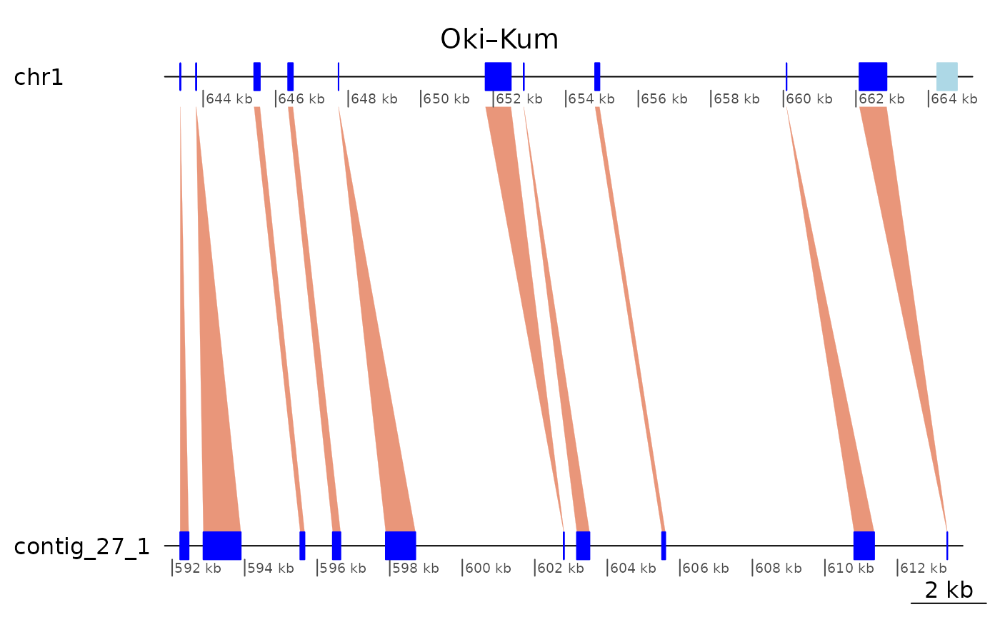

Regions of interest
Charles Plessy
30 March, 2022
Source:vignettes/RegionsOfInterest.Rmd
RegionsOfInterest.RmdLoad pacakges and data
See the vignette("OikScrambling", package = "OikScrambling") for general details on package and data load.
See vignette("LoadGenomicBreaks", package = "OikScrambling") for how the different GBreaks objects are prepared.
suppressPackageStartupMessages({
library('GenomicBreaks')
library('ggplot2')
library("BreakpointsData")
library("Biostrings")
})
genomes <- OikScrambling:::loadAllGenomes(compat = F)
load("BreakPoints.Rdata")
reps <- OikScrambling:::loadAllRepeats(compat = F)
transcripts <- OikScrambling:::loadAllTranscriptsGR(compat = F)The problem:
The plot below shows high colinearity between Oki and Kum, but the GenomicBreaks objects are still scattered in small pieces. What is interrupting colinearity?
plotApairOfChrs(coa$Oki_Kum, "chr1", main = "Oki – Kum")
In this vignette, we look at a couple of example regions in details. These regions helped me to decide how to process the data in Load Genomic Breaks (vignette("LoadGenomicBreaks", package = "OikScrambling") and to decide which analysis to prioritise elsewhere.
Alignments are real (Region of Interest 1)
# The best Kume contig matching ot chr1 is contig_3_1
bestMatch <- function(gb)
tapply(width(gb$query), seqnames(gb$query), sum) |> sort() |> tail(1) |> names()
coa$Oki_Kum |> plyranges::filter(seqnames == "chr1") |> bestMatch()## [1] "contig_3_1"
# contig_3_1 appears to map roughly in the 8,000,000 – 13,000,000 region
coa$Oki_Kum |> flagAll() |> plyranges::filter(seqnames(query) == "contig_3_1") |>
plyranges::arrange(start(query))## GBreaks object with 303 ranges and 8 metadata columns:
## seqnames ranges strand | query
## <Rle> <IRanges> <Rle> | <GRanges>
## [1] chr1 8086429-8100669 + | contig_3_1:714-16270
## [2] chr1 3870099-3870324 - | contig_3_1:16561-16812
## [3] chr1 8100696-8104950 + | contig_3_1:16822-21079
## [4] chr1 8106235-8126929 + | contig_3_1:21198-40210
## [5] PAR 9620326-9621010 - | contig_3_1:40220-40912
## ... ... ... ... . ...
## [299] chr1 12792338-12796149 + | contig_3_1:4603103-4606912
## [300] chr1 12799027-12831934 + | contig_3_1:4606913-4641495
## [301] chr1 12833633-12852708 + | contig_3_1:4641498-4657954
## [302] chr1 12866392-12879379 + | contig_3_1:4657955-4669933
## [303] chr1 12881855-12897271 + | contig_3_1:4669935-4684841
## score Arm rep repOvlp
## <integer> <factor> <CharacterList> <integer>
## [1] 14241 long tandem 121
## [2] 226 short rnd 85
## [3] 4255 long rnd,tandem 114
## [4] 20695 long rnd,unknown 711
## [5] 685 long unknown 685
## ... ... ... ... ...
## [299] 3812 long <NA> 0
## [300] 32908 long LowComplexity,rnd,unknown,... 2219
## [301] 19076 long tandem,rnd,unknown 933
## [302] 12988 long unknown,tandem,rnd 1423
## [303] 15417 long tandem,LowComplexity,rnd,... 688
## transcripts flag nonCoa
## <Rle> <character> <logical>
## [1] g2146.t1 <NA> FALSE
## [2] <NA> <NA> TRUE
## [3] g2151.t1;g2152.t1;g2.. Tra TRUE
## [4] g2153.t1;g2157.t1;g2.. <NA> FALSE
## [5] <NA> <NA> TRUE
## ... ... ... ...
## [299] <NA> <NA> TRUE
## [300] g3507.t1;g3511.t2;g3.. Tra FALSE
## [301] g3513.t1;g3515.t1 Tra FALSE
## [302] <NA> Tra FALSE
## [303] g3531.t1;g3532.t1;g3.. <NA> FALSE
## -------
## seqinfo: 19 sequences from OKI2018.I69 genomeHow about the second alignment pair, mapping 226 bases of contig_3_1 to the short arm?
ROI1 <- coa$Oki_Kum |>
plyranges::filter(seqnames(query) == "contig_3_1", end(query) <= 21079) |>
plyranges::arrange(start(query))
ROI1## GBreaks object with 3 ranges and 8 metadata columns:
## seqnames ranges strand | query score
## <Rle> <IRanges> <Rle> | <GRanges> <integer>
## [1] chr1 8086429-8100669 + | contig_3_1:714-16270 14241
## [2] chr1 3870099-3870324 - | contig_3_1:16561-16812 226
## [3] chr1 8100696-8104950 + | contig_3_1:16822-21079 4255
## Arm rep repOvlp transcripts flag
## <factor> <CharacterList> <integer> <Rle> <character>
## [1] long tandem 121 g2146.t1 <NA>
## [2] short rnd 85 <NA> <NA>
## [3] long rnd,tandem 114 g2151.t1;g2152.t1;g2.. Tra
## nonCoa
## <logical>
## [1] FALSE
## [2] TRUE
## [3] TRUE
## -------
## seqinfo: 19 sequences from OKI2018.I69 genome
coa$Oki_Kum |> plotApairOfChrs("chr1", "contig_3_1", xlim = gb2xlim(ROI1[-2]), main = "chr1 vs contig_3_1 at ROI 1")
coa$Oki_Kum |> plotApairOfChrs("chr1", "contig_3_1", xlim = list(c(3838658, 3881203), c(1, 21079)), main = "chr1 matching contig_3_1 in the short arm")
Is the alignment convincing ?
# Good match where reported
pairwiseAlignment(ROI1[2])## Global PairwiseAlignmentsSingleSubject (1 of 1)
## pattern: TCACTGATAAATTATCAGTGA-------------...CCATATTACACACTGGTCAAAGTGGTCAGCCCCC
## subject: TCACTGATAATTTATCAGTGATAAATTAACCTTC...CCATATTACACACTGGTCAAAGTGGTCAGCCCCC
## score: 262.3701See the full alignment with 50 bp of flanking regions added to contrast
pairwiseAlignment(ROI1[2] + 50, ROI1[2]$query + 50) |> writePairwiseAlignments()## ########################################
## # Program: Biostrings (version 2.62.0), a Bioconductor package
## # Rundate: Wed Mar 30 19:15:28 2022
## ########################################
## #=======================================
## #
## # Aligned_sequences: 2
## # 1: P1
## # 2: S1
## # Matrix: NA
## # Gap_penalty: 14.0
## # Extend_penalty: 4.0
## #
## # Length: 358
## # Identity: 279/358 (77.9%)
## # Similarity: NA/358 (NA%)
## # Gaps: 38/358 (10.6%)
## # Score: 9.038877
## #
## #
## #=======================================
##
## P1 1 GGGATTG-GACGA---AAGTA-----ACGGAAA-----TAAAAATATCTG 36
## | ||| | ||| ||| | ||| | | | | || |
## S1 1 AGCGTTGCGTCGAGTCGAGTCGGGCCAGGGAGAAGCCCTCTATA-ATAAG 49
##
## P1 37 GTTTCGG-TGCTTTATCACTGATAAATTATC-----------AGTGACCT 74
## || | | | ||||||| |||||||||| | | ||||||
## S1 50 GTCACTGATAATTTATCAGTGATAAATTAACCTTCTCTCATAAATGACCT 99
##
## P1 75 TCTCCCTTCAGGATATATAATAACCCCTTTCTTTCAATAGTTATACTTAT 124
## ||||||||||||||||||||||||||||||||||||||||||||||||||
## S1 100 TCTCCCTTCAGGATATATAATAACCCCTTTCTTTCAATAGTTATACTTAT 149
##
## P1 125 TTTTT-AGTATTATTCTGAATTTTTT-TAAAATTATCATTTGTCAATTTT 172
## ||||| ||||| |||||||||||||| | |||||||||||||||||||||
## S1 150 TTTTTTAGTATAATTCTGAATTTTTTCTGAAATTATCATTTGTCAATTTT 199
##
## P1 173 ATCGGCAAGATGCACCTTGGGAGCCCATTGCGTATTTATCGGATCTCAAA 222
## ||||| |||||||||| |||||||||||||||||||||||||||||||||
## S1 200 ATCGG-AAGATGCACCGTGGGAGCCCATTGCGTATTTATCGGATCTCAAA 248
##
## P1 223 GGATTAGCGCTTAGCATTGCCCATATTACACACTGGTCAAAGTGGTCAGC 272
## ||||||||||||||||||||||||||||||||||||||||||||||||||
## S1 249 GGATTAGCGCTTAGCATTGCCCATATTACACACTGGTCAAAGTGGTCAGC 298
##
## P1 273 CCCCTTCGAACCAA--CTCA-AGTGATG-GTCTCTTACTTCTGCGGAACG 318
## |||| || || |||| | ||||| || | | || | || |||
## S1 299 CCCCAAA-AATGAAGGCTCATAATGATGAGTGTGCAAATTTTTCGTAAC- 346
##
## P1 319 AACGGGGC 326
## | ||
## S1 347 --CTTTGC 352
##
##
## #---------------------------------------
## #---------------------------------------No good match between the flanking pairs.
pairwiseAlignment(getSeq(ROI1[2]$query), genomes$OKI2018.I69$chr1[8086429:8104950], type="local")## Local PairwiseAlignmentsSingleSubject (1 of 1)
## pattern: [113] TTCTGAATTTTTTCTG
## subject: [11595] TTCTGGATTTTTTCTG
## score: 23.82705
pairwiseAlignment(getSeq(genomes$KUM.M3.7f, GRanges("contig_3_1:16561-16812:-")), genomes$OKI2018.I69$chr1[8086429:8104950], type="local")## Local PairwiseAlignmentsSingleSubject (1 of 1)
## pattern: [221] AGGTTAATTTA
## subject: [1978] AGGTTAATTTA
## score: 21.79932Yes, the alignment looks real!
Colinearity interrupted by inversions and translocations (Region of Interest 2)
Let’s look at the area chr1:8080000-12900000 covered by contig_3_1. Can we coalesce it once we only keep the paired matches? The answer is no…
## GBreaks object with 303 ranges and 8 metadata columns:
## seqnames ranges strand | query
## <Rle> <IRanges> <Rle> | <GRanges>
## [1] chr1 8086429-8100669 + | contig_3_1:714-16270
## [2] chr1 8100696-8104950 + | contig_3_1:16822-21079
## [3] chr1 8105493-8106187 - | contig_29_1:1884094-1884784
## [4] chr1 8106235-8126929 + | contig_3_1:21198-40210
## [5] chr1 8126930-8192136 + | contig_3_1:40913-120953
## ... ... ... ... . ...
## [299] chr1 12852734-12866391 + | contig_82_1:2309881-2322607
## [300] chr1 12866392-12879379 + | contig_3_1:4657955-4669933
## [301] chr1 12880951-12881290 + | contig_27_1:4164345-4164661
## [302] chr1 12881855-12897271 + | contig_3_1:4669935-4684841
## [303] chr1 12897273-12899763 - | contig_88_1:1125832-1128287
## score Arm rep repOvlp
## <integer> <factor> <CharacterList> <integer>
## [1] 14241 long tandem 121
## [2] 4255 long rnd,tandem 114
## [3] 695 long unknown 0
## [4] 20695 long rnd,unknown 711
## [5] 65207 long LowComplexity,tandem 620
## ... ... ... ... ...
## [299] 13658 long unknown,rnd,tandem 131
## [300] 12988 long unknown,tandem,rnd 1423
## [301] 340 long rnd 0
## [302] 15417 long tandem,LowComplexity,rnd,... 688
## [303] 2491 long rnd 0
## transcripts flag nonCoa
## <Rle> <character> <logical>
## [1] g2146.t1 <NA> FALSE
## [2] g2151.t1;g2152.t1;g2.. Tra TRUE
## [3] <NA> <NA> TRUE
## [4] g2153.t1;g2157.t1;g2.. <NA> FALSE
## [5] g2160.t1;g2161.t1;g2.. <NA> FALSE
## ... ... ... ...
## [299] g3518.t1;g3519.t1;g3.. <NA> FALSE
## [300] <NA> Tra FALSE
## [301] <NA> <NA> TRUE
## [302] g3531.t1;g3532.t1;g3.. <NA> FALSE
## [303] <NA> Tra TRUE
## -------
## seqinfo: 19 sequences from OKI2018.I69 genome
# Even removing all but the best match on the query is not enough to collapse all
coa$Oki_Kum |>
plyranges::filter(seqnames == "chr1", start > 8080000, end < 12900000) |>
plyranges::filter(seqnames(query) == "contig_3_1") |>
coalesce_contigs() |> flagAll() |> head(10)## GBreaks object with 10 ranges and 3 metadata columns:
## seqnames ranges strand | query score
## <Rle> <IRanges> <Rle> | <GRanges> <integer>
## [1] chr1 8086429-8483438 + | contig_3_1:714-425640 397010
## [2] chr1 8485418-8487388 - | contig_3_1:428514-429368 1971
## [3] chr1 8489327-8883052 + | contig_3_1:432370-835845 393726
## [4] chr1 8883053-8945740 + | contig_3_1:836919-893789 62688
## [5] chr1 8953814-8955498 + | contig_3_1:905043-906751 1685
## [6] chr1 8957904-8966137 + | contig_3_1:896965-905042 8234
## [7] chr1 8967756-9470136 + | contig_3_1:906754-1383986 502381
## [8] chr1 9470145-9470890 - | contig_3_1:3260388-3261159 746
## [9] chr1 9470891-9891134 + | contig_3_1:1383987-1808624 420244
## [10] chr1 9891445-9891819 - | contig_3_1:1808635-1809010 375
## flag
## <character>
## [1] Inv
## [2] <NA>
## [3] <NA>
## [4] Tra
## [5] Tra
## [6] <NA>
## [7] Tra
## [8] <NA>
## [9] Inv
## [10] <NA>
## -------
## seqinfo: 19 sequences from OKI2018.I69 genome
coa$Oki_Kum |>
plyranges::filter(seqnames == "chr1", start > 8080000, end < 12900000) |>
plyranges::filter(seqnames(query) == "contig_3_1")|>
coalesce_contigs() |> plotApairOfChrs()Colinearity appears to be interrupted by many inversions and translocations.
Well-aligned repeats are kept in the one-to-one graph (Region of interest 3)
gbs$Oki_Kum[1] |> as.data.frame()## seqnames start end width strand score query.seqnames query.start query.end
## 1 chr1 7785 15657 7873 + 43650 contig_10_1 52244 60120
## query.width query.strand query.rep query.repOvlp query.transcripts Arm rep
## 1 7877 * rnd 7738 <NA> short rnd
## repOvlp transcripts flag nonCoa
## 1 6740 <NA> <NA> TRUE
pairwiseAlignment(gbs$Oki_Kum[1])## Global PairwiseAlignmentsSingleSubject (1 of 1)
## pattern: TAATATCGATACTGCAGAAGAACATAAAAAATAA...AGATTAGCTTAGAGAATCATCCTTATCGGTATCA
## subject: TAATATCGATACTGCAGAAGAACATAAAAAATAA...AGATTAGCTTAGAGAATCATCCTTATCGGTATCA
## score: 14961.67
subsetByOverlaps(reps$OKI2018.I69, gbs$Oki_Kum[1])## GRanges object with 5 ranges and 6 metadata columns:
## seqnames ranges strand | source type score phase
## <Rle> <IRanges> <Rle> | <factor> <factor> <numeric> <integer>
## [1] chr1 7783-7893 + | RepeatMasker similarity 16.8 <NA>
## [2] chr1 8181-13174 + | RepeatMasker similarity 25.6 <NA>
## [3] chr1 13538-13669 + | RepeatMasker similarity 22.0 <NA>
## [4] chr1 13971-14841 + | RepeatMasker similarity 22.2 <NA>
## [5] chr1 15005-15638 + | RepeatMasker similarity 18.2 <NA>
## Target Class
## <character> <factor>
## [1] Motif:rnd-1_family-1.. rnd
## [2] Motif:rnd-1_family-1.. rnd
## [3] Motif:rnd-1_family-3.. rnd
## [4] Motif:rnd-1_family-1.. rnd
## [5] Motif:rnd-1_family-2.. rnd
## -------
## seqinfo: 19 sequences from OKI2018.I69 genomeUnaligned mapped region: ROI4
Let’s check examples of unaligned mapped regions in function of presence of repeats.
FALSE/TRUE
bri$Oki_Osa -> x
x$Class <- paste(!sapply(x$rep, anyNA), !sapply(x$query$rep, anyNA))
x |> head() |> as.data.frame()## seqnames start end width strand query.seqnames query.start query.end
## 1 chr1 552336 552382 47 * Chr1 1730796 1731144
## 2 chr1 552648 552906 259 * Chr1 1730116 1730509
## 3 chr1 553835 553872 38 * Chr1 1728810 1729168
## 4 chr1 554135 554167 33 * Chr1 1728322 1728529
## 5 chr1 554366 554545 180 * Chr1 1727928 1728108
## 6 chr1 554693 555190 498 * Chr1 1727332 1727780
## query.width query.strand query.Arm query.rep query.repOvlp query.transcripts
## 1 349 * short rnd 388 <NA>
## 2 394 * short tandem 237 <NA>
## 3 359 * short NA 0 g385.t1
## 4 208 * short NA 0 g385.t1
## 5 181 * short NA 0 g384.t1
## 6 449 * short NA 0 g384.t1
## Arm rep repOvlp transcripts Class
## 1 short NA 0 g56.t1 FALSE TRUE
## 2 short NA 0 <NA> FALSE TRUE
## 3 short NA 0 <NA> FALSE FALSE
## 4 short NA 0 <NA> FALSE FALSE
## 5 short NA 0 <NA> FALSE FALSE
## 6 short rnd 162 <NA> TRUE FALSE
ROI4_1 <- x[1]
# Let's recover the flanking regions
# We expand the bri regions of 1 base on each side to promote overlaps with gbs regions)
gbs$Oki_Osa |> subsetByOverlaps(ROI4_1 + 1) |> as.data.frame()## seqnames start end width strand score query.seqnames query.start
## 1 chr1 551988 552335 348 - 680 Chr1 1731145
## 2 chr1 552383 552647 265 - 416 Chr1 1730510
## query.end query.width query.strand query.Arm query.rep query.repOvlp
## 1 1731548 404 * short NA 0
## 2 1730795 286 * short rnd 4
## query.transcripts Arm rep repOvlp transcripts flag nonCoa
## 1 <NA> short NA 0 g56.t1 Col FALSE
## 2 <NA> short NA 0 g56.t1 Col FALSE
gbs$Oki_Osa |> subsetByOverlaps(ROI4_1 + 1) |> range()## GBreaks object with 1 range and 1 metadata column:
## seqnames ranges strand | query
## <Rle> <IRanges> <Rle> | <GRanges>
## [1] chr1 551988-552647 * | Chr1:1730510-1731548
## -------
## seqinfo: 19 sequences from OKI2018.I69 genome
# We confirm that unalmap regions can not be mapped
pairwiseAlignment(ROI4_1)## Global PairwiseAlignmentsSingleSubject (1 of 1)
## pattern: T------------TCCTCC---------------...---------------ATC-TATT-------TGGT
## subject: TAGTTCAGTTAACTCATGCGGGGAAAGTAGCCAA...TTAGTTTTAATGATTATCATATTAACTGCATACT
## score: -1254.263
pairwiseAlignment(getSeq(ROI4_1), getSeq(ROI4_1$query) |> reverseComplement() ) ## Global PairwiseAlignmentsSingleSubject (1 of 1)
## pattern: ---------TT-----------------------...TTTGGT----------------------------
## subject: AGTATGCAGTTAATATGATAATCATTAAAACTAA...TTGGCTACTTTCCCCGCATGAGTTAACTGAACTA
## score: -1260.025
# We confirm that flanking regions map well
pairwiseAlignment(getSeq(ROI4_1 + 100), getSeq(ROI4_1$query + 100) |> reverseComplement(), type="global")## Global PairwiseAlignmentsSingleSubject (1 of 1)
## pattern: ACCCAATTACGCGACCGCCAGGGGTTGTCGGGTA...CATTAGTCGAAGAATGCTCAAAACGCATACCTG-
## subject: ACCCGACTATTCGACCGCCGGCAGTTGTCGGATA...TATTTCTAGAATAC--CTGATAA---ATAACAGA
## score: -1312.463
# Only one hit
#vmatchPattern(genomes$Osa$Chr1[1730795:1731145], genomes$Osa, with.indels = TRUE, max.mismatch = 10)FALSE/FALSE
ROI4_2 <- x[5]
# As character for convenience of BLAST searching.
getSeq(ROI4_2) |> as.character() # Only one perfect BLAST hit at the NCBI, to the Oki genome.## [1] "AAAGGCTGCTCTAGAATTTTTGATCAAGCGGCAATTATCATTTGCTTGAATTTTATGCCAAAACTTCCTTCTTTGCATTTCGCCGAAAACACTGATAAGAAACGTTTTCGGCAAAAGCGGAAAGTGTCAACTTCCGCGAAAGGCGCCGTTCAATTTTCTAGTGCCTTTTCGAGCCCATTA"
getSeq(ROI4_2$query)|> as.character() # No relevant BLAST hit at the NCBI (evalues >= 1e-4)## [1] "CTCAGGATCGACATGCTTCTTAGAAACCACTGATTTTTCGAAGAAAGGTGCGAAATTTTAAGATCAAGAAAAATCTTAAATTCAACAATTTTTTTTGAAAATGGAAAAAAAAATTTTTGTCACAGCGCGATTGAACGCTAACCCTTCCCATTTCTTCAATCTTTTTCCGATACGAAGCATG"
vmatchPattern(genomes$OKI2018.I69$chr1[554365:554546], genomes$OKI2018.I69)## GRanges object with 1 range and 0 metadata columns:
## seqnames ranges strand
## <Rle> <IRanges> <Rle>
## [1] chr1 554365-554546 +
## -------
## seqinfo: 19 sequences from OKI2018.I69 genome
# unaligned mapped region (+ / -)
pairwiseAlignment(ROI4_2)## Global PairwiseAlignmentsSingleSubject (1 of 1)
## pattern: AA-AGGCTGCTCTAGAATTTTTGATCAAGCGGCA...AATTTTCT--AGTGCCTTTTCGAGCCCA---TTA
## subject: CTCAGGATCGACATGCTTCTTAGAAACCACTG-A...CCATTTCTTCAATCTTTTTCCGATACGAAGCATG
## score: -477.1049
pairwiseAlignment(getSeq(ROI4_2), getSeq(ROI4_2$query) |> reverseComplement() )## Global PairwiseAlignmentsSingleSubject (1 of 1)
## pattern: AAAGGCTGCTCTAG---AATTTTTGATCAAGCGG...CAAT--TTTCTA-GTGCCTTTTCGAGCCCATTA-
## subject: CATGCTTCGTATCGGAAAAAGATTGAAGAAATGG...CAGTGGTTTCTAAGAAGCATGTCGATCC--TGAG
## score: -429.3151
# Identity of ~50% but no striking difference between strands
# unaligned mapped region with flanking colinear alignments.
gbs$Oki_Osa |> subsetByOverlaps(ROI4_2 + 1)## GBreaks object with 2 ranges and 8 metadata columns:
## seqnames ranges strand | score query Arm
## <Rle> <IRanges> <Rle> | <numeric> <GRanges> <factor>
## [1] chr1 554168-554365 - | 450 Chr1:1728109-1728321 short
## [2] chr1 554546-554692 - | 564 Chr1:1727781-1727927 short
## rep repOvlp transcripts flag nonCoa
## <CharacterList> <integer> <Rle> <character> <logical>
## [1] <NA> 0 <NA> Col FALSE
## [2] <NA> 0 <NA> Col FALSE
## -------
## seqinfo: 19 sequences from OKI2018.I69 genome
pairwiseAlignment(getSeq(ROI4_2 + 150), getSeq(ROI4_2$query + 150) |> reverseComplement(), type="global")|> writePairwiseAlignments(b=60)## ########################################
## # Program: Biostrings (version 2.62.0), a Bioconductor package
## # Rundate: Wed Mar 30 19:15:51 2022
## ########################################
## #=======================================
## #
## # Aligned_sequences: 2
## # 1: P1
## # 2: S1
## # Matrix: NA
## # Gap_penalty: 14.0
## # Extend_penalty: 4.0
## #
## # Length: 513
## # Identity: 344/513 (67.1%)
## # Similarity: NA/513 (NA%)
## # Gaps: 65/513 (12.7%)
## # Score: -421.8027
## #
## #
## #=======================================
##
## P1 1 GAAAAGAACCCCTCCGATCTCGAAATCGATCATAATTGGAACTTTGTTTTTTATTTTACG 60
## | | || ||||||| ||||||||||||| ||||| |||||| |
## S1 1 AA---------------TTTCAAAATCGACCATAATTGGAACTCTGTTTACTATTTTTTG 45
##
## P1 61 AATGCTCATCTTTT-------TATTTTTTCGAAAATGGAATTTTTTTTTG-CAG------ 106
## |||||||| |||| ||||||||| | |||||||||| |||
## S1 46 GATGCTCATTTTTTATAAGAATATTTTTTC-AGCGTGGAATTTTTGCAGATCAGGAAAAC 104
##
## P1 107 AAGGAAGGTT-TGAATTTTTCATTTTTGGCGGA-CAATGGGCTCAAAAAGGCTGCTCTAG 164
## ||||||| | ||||||||| ||| ||||||| ||| ||||| | | | | | | |
## S1 105 AAGGAAGCTCGTGAATTTTTTATTCGTGGCGGAACAAAAGGCTCGACATGCTTCGTATCG 164
##
## P1 165 ---AATTTTTGATCAAGCGGCAA---TTATCATTTGCTTGAATTTTATGCCAAAACTTCC 218
## || |||| || || || ||| | || | | | || ||||| ||
## S1 165 GAAAAAGATTGAAGAAATGGGAAGGGTTAGCGTTCAATCGCGC--TGTGACAAAAATTTT 222
##
## P1 219 TTCTTTGCATTTCGCCGAAAACACTGAT-AAGAAACGTTTTCGGCAAAAGCGGAAAGTGT 277
## || ||| ||||| | |||| | || | || | | ||| | | | ||| | |
## S1 223 TT-TTTCCATTTT-CAAAAAAAATTGTTGAATTTAAGATTTTT-CTTGATCTTAAAATTT 279
##
## P1 278 C--AACTTCC-GCGAAAGGCGCCGTTCAAT--TTTCTA-GTGCCTTTTCGAGCCCATTA- 330
## | | ||| | ||||| ||| | |||||| | | | |||| || | |
## S1 280 CGCACCTTTCTTCGAAAAA------TCAGTGGTTTCTAAGAAGCATGTCGATCC--TGAG 331
##
## P1 331 AGCTGCTGCAGCAGATGCATGGAACTACGTGTTTGACGACTTTGAAAAAGGGATTTCGGC 390
## |||| ||||||| || ||||||||||||| ||||||||||||||||||||||||||||
## S1 332 AGCTTGTGCAGCAAATACATGGAACTACGTAATTGACGACTTTGAAAAAGGGATTTCGGC 391
##
## P1 391 CGCTGCTTTGAGTCGC---GCTGGACCGCGGGGCGTCGCCTGATCCGCTTTCGTTGATCT 447
## || | ||| |||| |||||||||||||||||||||||||||||||||||||||||
## S1 392 CGGT---TTGCGTCGATGAGCTGGACCGCGGGGCGTCGCCTGATCCGCTTTCGTTGATCT 448
##
## P1 448 TCGCATTGCTCGACAGTTTGCGCTCCATCTTGT 480
## ||||||||||||||||||||||||||||||
## S1 449 TCGCATTGCTCGACAGTTTGCGCTCCATCTGTA 481
##
##
## #---------------------------------------
## #---------------------------------------TRUE/TRUE
ROI4_3 <- x[12]
ROI4_3 |> data.frame()## seqnames start end width strand query.seqnames query.start query.end
## 1 chr1 561647 562123 477 * Chr1 1722713 1723219
## query.width query.strand query.Arm query.rep query.repOvlp
## 1 507 * short rnd 195
## query.transcripts Arm rep repOvlp transcripts Class
## 1 g383.t2;g383.t1;g383.t3 short tandem 158 g57.t3;g57.t1;g57.t2 TRUE TRUE
# As character for convenience of BLAST searching.
getSeq(ROI4_3) |> as.character() # Only one perfect BLAST hit at the NCBI, to the Oki genome.## [1] "ATCATAGCAATCGGTATTTTGGTAGAGATTAACGAGCGAAAAGGAACATCCAGTAGCTCTTCAGTCCCTTGAATCCTTCGTGAAATGTGGTTGTTGTTGTTCCTGACGAATTTGAAGTCGTTGTCTTAGTCGTTGTTGTTGTTGAACGTGTAGTGGTTTTTTTAGTGGTTGTTGTCGATGTCAATGATAATGTGGATGTTGTTGTTTTTGTTGTTTGCGTAGACATTGTTGTTGATGATTTTGAGGGTGCTGGCGTATTGGAAATAGAACTTGTCATCTGATAAGTCGACAGATTTGTCATGTCAGTCGTCAGGGATGATTCTGCCGTTGTTAGATTGTCAACACTCGGATCGAGATCTTCATTTTTTCCAAGGCAAAGAGGAATCGTGATTCCAAGAATTGTTACTATCACTGCAGAAACTTCATTTCACACCGAAATTGTTATTCAAATATAATTCTTAAATACCTAGCGCGAAT"
getSeq(ROI4_3$query)|> as.character() # No relevant BLAST hit at the NCBI (evalues >= 1e-4)## [1] "CTTGTTTATGAGTTAAAAAAAACTTTTTAATATATCTTTGCTTCAAAAGCTTGAATTAAGTTACGACGATTATTATTGTTATCCTCGGATGTATCCCGGTTTTTATCGAAAAAAACAATGAAATAACCACAAACTCGACAACAATGCCTGACTCAACAACAATTATCATCACTACAACGACTGTTCCTGACTTAATACTATTGAACGAAACTCTGACAACAACAACACTGACCTCGAAATCGAGCGCCACTTTGTCAACCACTACAAAAACTATTACAACCAACGCAACAACGACTTCCGCGACTACAACGACAACAACGAGTTCAACAACAACTACAACAACATCGACAACACCAACAACAACCGCGACCGGTTCTTCTACGACTACAACTCCAACCACAACATCAACAACATTGAACACAACGTCAACGACATCAACAACAACATCAAAATGTGTTCCATTTGACGAGTACGACGATATTTGTCCGTAATTTCTGGCAATTTGTC"
# unaligned mapped region (+ / -)
pairwiseAlignment(ROI4_3)## Global PairwiseAlignmentsSingleSubject (1 of 1)
## pattern: ATCATAGCAATCGGTATTTTGGTAGAGATTAACG...-ATATAATTCTTAAATACCTAGCGCGAAT-----
## subject: CTT----------GTTTATGAGTTAAAAAAAACT...GATATTTGTCCGTAATTTCTGGC---AATTTGTC
## score: -1463.191
pairwiseAlignment(getSeq(ROI4_3), getSeq(ROI4_3$query) |> reverseComplement() )## Global PairwiseAlignmentsSingleSubject (1 of 1)
## pattern: ATCATAGCAATCGGTATTTTGG-----TAGAGAT...ATTCAAATATAATTCTTAAATACCTAGCGCGAAT
## subject: GACAAATTGCCAGAAATTACGGACAAATATCGTC...ATTAAAAAGTTTTTTTTAACTCATAAAC---AAG
## score: -1006.199
# Identity of ~50% but no striking difference between strands
# unaligned mapped region with flanking colinear alignments.
gbs$Oki_Osa |> subsetByOverlaps(ROI4_3 + 1)## GBreaks object with 2 ranges and 8 metadata columns:
## seqnames ranges strand | score query Arm
## <Rle> <IRanges> <Rle> | <numeric> <GRanges> <factor>
## [1] chr1 561142-561646 - | 1387 Chr1:1723220-1723727 short
## [2] chr1 562124-563743 - | 2869 Chr1:1720807-1722712 short
## rep repOvlp transcripts flag nonCoa
## <CharacterList> <integer> <Rle> <character> <logical>
## [1] <NA> 0 <NA> Col FALSE
## [2] LowComplexity 0 <NA> Col FALSE
## -------
## seqinfo: 19 sequences from OKI2018.I69 genome
pairwiseAlignment(getSeq(ROI4_3 + 150), getSeq(ROI4_3$query + 150) |> reverseComplement(), type="global")|> writePairwiseAlignments(b=60)## ########################################
## # Program: Biostrings (version 2.62.0), a Bioconductor package
## # Rundate: Wed Mar 30 19:15:53 2022
## ########################################
## #=======================================
## #
## # Aligned_sequences: 2
## # 1: P1
## # 2: S1
## # Matrix: NA
## # Gap_penalty: 14.0
## # Extend_penalty: 4.0
## #
## # Length: 839
## # Identity: 499/839 (59.5%)
## # Similarity: NA/839 (NA%)
## # Gaps: 94/839 (11.2%)
## # Score: -1188.32
## #
## #
## #=======================================
##
## P1 1 ATTATCATTCCGTATAAAAATAGAGAGGAGCATCTGCGCGCCCTGCTGAATACATTGCAT 60
## ||||| |||||||| || ||| ||||||| || |||||||| |||| ||||||||||||
## S1 1 ATTATTATTCCGTACAAGAATCGAGAGGAACACCTGCGCGCGTTGCTTAATACATTGCAT 60
##
## P1 61 CCAATTCTTCAAAGACAAAACACCGCATACTGCATTTATGTGGGCGAGCAGCATGACGAT 120
## || | ||| || | || |||||||| |||||||||||||||| |||||| |||||||||
## S1 61 CCGACTCTGCAGCGGCAGAACACCGCGTACTGCATTTATGTGGCCGAGCAACATGACGAT 120
##
## P1 121 GGCAGATTTAATAAAGGTTTGTTTATTTTTATCATAGCAATCGGTATTTTGG-----TAG 175
## ||||||||||| |||||| |||| |||| || | | ||| || ||
## S1 121 GGCAGATTTAACAAAGGTCAGTTTTATTTTGACAAATTGCCAGAAATTACGGACAAATAT 180
##
## P1 176 AGATTAACGAGCGAAAAGGAACA-----TCCAGTAGCTCTTCAGTCCCTTGAATCCTTC- 229
## | || | ||| |||||| | || | | || | | |||| | ||
## S1 181 CGTCGTACTCGTCAAATGGAACACATTTTGATGTTGTTGTTGATGTCGTTGA--CGTTGT 238
##
## P1 230 GTGAAATGTGGTTGTTGTTGTTCCTGACGAATTTGAAGTCGTTGTCTTA---GTCGTTGT 286
## || ||||| |||| |||||| || | ||| |||||| | | |||| ||
## S1 239 GTTCAATGTTGTTGATGTTGTGGTTGGAG---TTGTAGTCGTAGAAGAACCGGTCGCGGT 295
##
## P1 287 TGTTGTTGAACGTGTAGTGGTTTTTTTAGTGGTTGTTG------TCGATGTCAATGATAA 340
## |||||||| ||| | ||| || |||| ||||||| | | |||| || ||
## S1 296 TGTTGTTGGTGTTGTCGATGTTGTTGTAGTTGTTGTTGAACTCGTTGTTGTCGTTG-TAG 354
##
## P1 341 T-GTGGATGTTGTTGTTTTTGTTGTTTGCG-TAGACATTGTTGTTGATGATTTTGAGGGT 398
## | | ||| || |||||| |||| ||| ||| |||| || | ||| | ||
## S1 355 TCGCGGAAGTCGTTGTTGC-GTTGGTTGTAATAGTTTTTGTAGTGGTTGACAAAGTGGC- 412
##
## P1 399 GCTGGCGTATTGGAAATA---GAACTTGTCATCTGA---TAAGTCGACAGATTT--GTCA 450
## ||| || || || | | |||| || || | || | || || ||||
## S1 413 GCT--CGATTTCGAGGTCAGTGTTGTTGTTGTCAGAGTTTCGTTCAATAGTATTAAGTCA 470
##
## P1 451 TGT-CAGTCGTC--AGGGATGATTCTGCCGTTGTTAGATTGTCAA-CACTCGGATCGAGA 506
## | ||||||| || |||||| | |||||| || |||| || | |||||
## S1 471 GGAACAGTCGTTGTAGTGATGATAATT--GTTGTT-GA--GTCAGGCATTGTTGTCGAGT 525
##
## P1 507 TC--------TTCATT-TTTTCCAAGGCAAAGAGGAATCGTGAT---TCCAAGAATTGTT 554
## | |||||| |||| | ||| || || ||| ||| || ||
## S1 526 TTGTGGTTATTTCATTGTTTTTTTCGATAAA----AACCGGGATACATCCGAGGATAACA 581
##
## P1 555 ACTATCACTGCAGAAACTTCATTTCAC------ACCGAAATTGTTATTCAAATATAATTC 608
## | || | | | ||||| ||| | | ||| |||| ||| | ||
## S1 582 ATAATAATCGTCGTAACTTAATTCAAGCTTTTGAAGCAAAGATATATTAAAAAGTTTTTT 641
##
## P1 609 TTAAATACCTAGCGCGAATCCAACAATAATCCTTTTTCGTTTTCTCCAACCTCTTTTGTA 668
## |||| | | | || || | | || || |||||| |||||||| ||||||| | |
## S1 642 TTAACTCATAAAC---AAGCCGATGAGAACCCGTTTTCGCTTTCTCCATCCTCTTT-GAA 697
##
## P1 669 AATGTTTGCAATATTATATTCTTCGAGAAAGAATATTTATAAGTTTAATT----AATGCT 724
## |||||| || || | | || ||| ||||| | | | || || |
## S1 698 AATGTT--CAGTAAGA-------CTAGTTTGAAAATTTACACGCGTCTTTGCAGAACATT 748
##
## P1 725 GAGT-GAATATTCGTCTATAAACATTTTCTTGACA-CACTCACAAAAAATCCGTT---- 777
## | | ||| || | | ||| |||||| | | | | | | ||
## S1 749 AACTTGAAACTTTTACAAAAAATCCTTTCTTCTCGTCTGTGGTCATATTGACTTTTTCA 807
##
##
## #---------------------------------------
## #---------------------------------------What still interrupts colinearity once repeats are ruled out ? (ROI5)
We start with a random region
coa$Oki_Kum |> flagAll() |> plyranges::slice(200:210) |> as.data.frame()## seqnames start end width strand query.seqnames query.start query.end
## 1 chr1 1436172 1436279 108 + contig_3_1 4439096 4439203
## 2 chr1 1436544 1466354 29811 + contig_27_1 1409471 1440844
## 3 chr1 1466359 1470295 3937 + contig_27_1 1441222 1445179
## 4 chr1 1470311 1471259 949 + contig_27_1 1445585 1446558
## 5 chr1 1471276 1478839 7564 + contig_27_1 1447542 1456167
## 6 chr1 1478840 1479523 684 - contig_11_1 467930 468616
## 7 chr1 1479524 1481440 1917 + contig_27_1 1456168 1458038
## 8 chr1 1483131 1483268 138 + contig_43_1 62949 63085
## 9 chr1 1484885 1485855 971 - contig_16_1 4442527 4444265
## 10 chr1 1485856 1486085 230 - contig_16_1 4441532 4441769
## 11 chr1 1486156 1486497 342 + contig_16_1 4446412 4446746
## query.width query.strand query.rep query.repOvlp
## 1 108 * rnd 108
## 2 31374 * tandem, .... 3619
## 3 3958 * rnd, unknown 676
## 4 974 * NA 0
## 5 8626 * rnd, unk.... 2355
## 6 687 * unknown 684
## 7 1871 * rnd, unknown 1698
## 8 137 * NA 0
## 9 1739 * unknown, rnd 353
## 10 238 * NA 0
## 11 335 * NA 0
## query.transcripts
## 1 g8176.t1
## 2 g3891.t1;g3892.t1;g3893.t1;g3894.t1;g3895.t1;g3898.t1;g3899.t1;g3896.t1;g3897.t1;g3900.t2;g3900.t1;g3901.t1
## 3 g3902.t1;g3902.t2;g3901.t1
## 4 g3902.t1;g3902.t2
## 5 g3904.t1;g3903.t1
## 6 <NA>
## 7 <NA>
## 8 g12993.t1
## 9 <NA>
## 10 <NA>
## 11 <NA>
## score Arm rep repOvlp
## 1 108 short rnd 108
## 2 29811 short tandem, .... 1178
## 3 3937 short rnd, unknown 697
## 4 949 short NA 0
## 5 7564 short rnd, unk.... 562
## 6 684 short rnd 684
## 7 1917 short rnd, unk.... 1592
## 8 138 short NA 0
## 9 971 short tandem 0
## 10 230 short NA 0
## 11 342 short NA 0
## transcripts flag nonCoa
## 1 g302.t1 <NA> TRUE
## 2 g302.t1;g303.t1;g304.t1;g306.t1;g307.t1;g308.t1;g313.t1;g314.t1 <NA> FALSE
## 3 g319.t1;g319.t2 <NA> FALSE
## 4 g319.t1;g319.t2 <NA> TRUE
## 5 g321.t1 Tra FALSE
## 6 <NA> <NA> TRUE
## 7 <NA> <NA> TRUE
## 8 <NA> <NA> TRUE
## 9 <NA> <NA> FALSE
## 10 <NA> <NA> TRUE
## 11 <NA> <NA> TRUELet’s focus on alignments between chr1 and contig_27_1:
ROI5.range <- coa$Oki_Kum[200:210] |> dplyr::filter(seqnames == "chr1", seqnames(query) == "contig_27_1") |> range()
ROI5.range## GBreaks object with 1 range and 1 metadata column:
## seqnames ranges strand | query
## <Rle> <IRanges> <Rle> | <GRanges>
## [1] chr1 1436544-1481440 * | contig_27_1:1409471-1458038
## -------
## seqinfo: 19 sequences from OKI2018.I69 genome
ROI5 <- subsetByOverlaps(coa$Oki_Kum, ROI5.range) |> sort(ignore.strand=T)
# Let's capture all the pairs that overlap that range:
ROI5 |> sort(ignore.strand=T) |> as.data.frame()## seqnames start end width strand query.seqnames query.start query.end
## 1 chr1 1436544 1466354 29811 + contig_27_1 1409471 1440844
## 2 chr1 1466359 1470295 3937 + contig_27_1 1441222 1445179
## 3 chr1 1470311 1471259 949 + contig_27_1 1445585 1446558
## 4 chr1 1471276 1478839 7564 + contig_27_1 1447542 1456167
## 5 chr1 1478840 1479523 684 - contig_11_1 467930 468616
## 6 chr1 1479524 1481440 1917 + contig_27_1 1456168 1458038
## 7 chr1 2405232 2405393 162 - contig_27_1 1445390 1445562
## 8 chr1 9897740 9898012 273 + contig_27_1 1447046 1447318
## 9 chr2 3010219 3010391 173 - contig_27_1 1441042 1441221
## query.width query.strand query.rep query.repOvlp
## 1 31374 * tandem, .... 3619
## 2 3958 * rnd, unknown 676
## 3 974 * NA 0
## 4 8626 * rnd, unk.... 2355
## 5 687 * unknown 684
## 6 1871 * rnd, unknown 1698
## 7 173 * tandem, rnd 68
## 8 273 * rnd, unknown 2
## 9 180 * rnd 180
## query.transcripts
## 1 g3891.t1;g3892.t1;g3893.t1;g3894.t1;g3895.t1;g3898.t1;g3899.t1;g3896.t1;g3897.t1;g3900.t2;g3900.t1;g3901.t1
## 2 g3902.t1;g3902.t2;g3901.t1
## 3 g3902.t1;g3902.t2
## 4 g3904.t1;g3903.t1
## 5 <NA>
## 6 <NA>
## 7 g3902.t1;g3902.t2
## 8 <NA>
## 9 g3901.t1
## score Arm rep repOvlp
## 1 29811 short tandem, .... 1178
## 2 3937 short rnd, unknown 697
## 3 949 short NA 0
## 4 7564 short rnd, unk.... 562
## 5 684 short rnd 684
## 6 1917 short rnd, unk.... 1592
## 7 162 short NA 0
## 8 273 long tandem 24
## 9 173 short NA 0
## transcripts flag nonCoa
## 1 g302.t1;g303.t1;g304.t1;g306.t1;g307.t1;g308.t1;g313.t1;g314.t1 <NA> FALSE
## 2 g319.t1;g319.t2 <NA> FALSE
## 3 g319.t1;g319.t2 <NA> TRUE
## 4 g321.t1 Tra FALSE
## 5 <NA> <NA> TRUE
## 6 <NA> <NA> TRUE
## 7 <NA> <NA> TRUE
## 8 g2641.t1 <NA> TRUE
## 9 g4701.t1 <NA> TRUE
ROI5 |> dplyr::arrange(query) |> as.data.frame()## seqnames start end width strand query.seqnames query.start query.end
## 1 chr1 1478840 1479523 684 - contig_11_1 467930 468616
## 2 chr1 1436544 1466354 29811 + contig_27_1 1409471 1440844
## 3 chr2 3010219 3010391 173 - contig_27_1 1441042 1441221
## 4 chr1 1466359 1470295 3937 + contig_27_1 1441222 1445179
## 5 chr1 2405232 2405393 162 - contig_27_1 1445390 1445562
## 6 chr1 1470311 1471259 949 + contig_27_1 1445585 1446558
## 7 chr1 9897740 9898012 273 + contig_27_1 1447046 1447318
## 8 chr1 1471276 1478839 7564 + contig_27_1 1447542 1456167
## 9 chr1 1479524 1481440 1917 + contig_27_1 1456168 1458038
## query.width query.strand query.rep query.repOvlp
## 1 687 * unknown 684
## 2 31374 * tandem, .... 3619
## 3 180 * rnd 180
## 4 3958 * rnd, unknown 676
## 5 173 * tandem, rnd 68
## 6 974 * NA 0
## 7 273 * rnd, unknown 2
## 8 8626 * rnd, unk.... 2355
## 9 1871 * rnd, unknown 1698
## query.transcripts
## 1 <NA>
## 2 g3891.t1;g3892.t1;g3893.t1;g3894.t1;g3895.t1;g3898.t1;g3899.t1;g3896.t1;g3897.t1;g3900.t2;g3900.t1;g3901.t1
## 3 g3901.t1
## 4 g3902.t1;g3902.t2;g3901.t1
## 5 g3902.t1;g3902.t2
## 6 g3902.t1;g3902.t2
## 7 <NA>
## 8 g3904.t1;g3903.t1
## 9 <NA>
## score Arm rep repOvlp
## 1 684 short rnd 684
## 2 29811 short tandem, .... 1178
## 3 173 short NA 0
## 4 3937 short rnd, unknown 697
## 5 162 short NA 0
## 6 949 short NA 0
## 7 273 long tandem 24
## 8 7564 short rnd, unk.... 562
## 9 1917 short rnd, unk.... 1592
## transcripts flag nonCoa
## 1 <NA> <NA> TRUE
## 2 g302.t1;g303.t1;g304.t1;g306.t1;g307.t1;g308.t1;g313.t1;g314.t1 <NA> FALSE
## 3 g4701.t1 <NA> TRUE
## 4 g319.t1;g319.t2 <NA> FALSE
## 5 <NA> <NA> TRUE
## 6 g319.t1;g319.t2 <NA> TRUE
## 7 g2641.t1 <NA> TRUE
## 8 g321.t1 Tra FALSE
## 9 <NA> <NA> TRUE
ROI5 |> plotApairOfChrs(xlim = gb2xlim(ROI5.range))
Very short gaps between successive ranges in ROI5
cleanGaps(ROI5) |> as.data.frame()## seqnames start end width strand
## 1 chr1 1466355 1466358 4 *
## 2 chr1 1470296 1470310 15 *
## 3 chr1 1471260 1471275 16 *
## 4 chr1 1481441 2405231 923791 *
## 5 chr1 2405394 9897739 7492346 *
ROI5 |> flagAll() |> dist2next( ignore.strand = TRUE) |> as.data.frame()## seqnames start end width strand query.seqnames query.start query.end
## 1 chr1 1436544 1466354 29811 + contig_27_1 1409471 1440844
## 2 chr1 1466359 1470295 3937 + contig_27_1 1441222 1445179
## 3 chr1 1470311 1471259 949 + contig_27_1 1445585 1446558
## 4 chr1 1471276 1478839 7564 + contig_27_1 1447542 1456167
## 5 chr1 1478840 1479523 684 - contig_11_1 467930 468616
## 6 chr1 1479524 1481440 1917 + contig_27_1 1456168 1458038
## 7 chr1 2405232 2405393 162 - contig_27_1 1445390 1445562
## 8 chr1 9897740 9898012 273 + contig_27_1 1447046 1447318
## 9 chr2 3010219 3010391 173 - contig_27_1 1441042 1441221
## query.width query.strand query.rep query.repOvlp
## 1 31374 * tandem, .... 3619
## 2 3958 * rnd, unknown 676
## 3 974 * NA 0
## 4 8626 * rnd, unk.... 2355
## 5 687 * unknown 684
## 6 1871 * rnd, unknown 1698
## 7 173 * tandem, rnd 68
## 8 273 * rnd, unknown 2
## 9 180 * rnd 180
## query.transcripts
## 1 g3891.t1;g3892.t1;g3893.t1;g3894.t1;g3895.t1;g3898.t1;g3899.t1;g3896.t1;g3897.t1;g3900.t2;g3900.t1;g3901.t1
## 2 g3902.t1;g3902.t2;g3901.t1
## 3 g3902.t1;g3902.t2
## 4 g3904.t1;g3903.t1
## 5 <NA>
## 6 <NA>
## 7 g3902.t1;g3902.t2
## 8 <NA>
## 9 g3901.t1
## score Arm rep repOvlp
## 1 29811 short tandem, .... 1178
## 2 3937 short rnd, unknown 697
## 3 949 short NA 0
## 4 7564 short rnd, unk.... 562
## 5 684 short rnd 684
## 6 1917 short rnd, unk.... 1592
## 7 162 short NA 0
## 8 273 long tandem 24
## 9 173 short NA 0
## transcripts flag nonCoa
## 1 g302.t1;g303.t1;g304.t1;g306.t1;g307.t1;g308.t1;g313.t1;g314.t1 <NA> FALSE
## 2 g319.t1;g319.t2 <NA> FALSE
## 3 g319.t1;g319.t2 <NA> TRUE
## 4 g321.t1 Tra FALSE
## 5 <NA> <NA> TRUE
## 6 <NA> <NA> TRUE
## 7 <NA> <NA> TRUE
## 8 g2641.t1 <NA> TRUE
## 9 g4701.t1 <NA> TRUE
## tdist qdist
## 1 5 378
## 2 16 406
## 3 17 984
## 4 1 NA
## 5 1 NA
## 6 923792 10606
## 7 7492347 1484
## 8 NA 5825
## 9 Inf Inf
ROI5 |> swap() |> sort(ignore.strand = TRUE) |> flagAll()|> dist2next( ignore.strand = TRUE, step =2) |> as.data.frame()## seqnames start end width strand rep repOvlp
## 1 contig_11_1 467930 468616 687 - unknown 684
## 2 contig_27_1 1409471 1440844 31374 + tandem, .... 3619
## 3 contig_27_1 1441042 1441221 180 - rnd 180
## 4 contig_27_1 1441222 1445179 3958 + rnd, unknown 676
## 5 contig_27_1 1445390 1445562 173 - tandem, rnd 68
## 6 contig_27_1 1445585 1446558 974 + NA 0
## 7 contig_27_1 1447046 1447318 273 + rnd, unknown 2
## 8 contig_27_1 1447542 1456167 8626 + rnd, unk.... 2355
## 9 contig_27_1 1456168 1458038 1871 + rnd, unknown 1698
## transcripts
## 1 <NA>
## 2 g3891.t1;g3892.t1;g3893.t1;g3894.t1;g3895.t1;g3898.t1;g3899.t1;g3896.t1;g3897.t1;g3900.t2;g3900.t1;g3901.t1
## 3 g3901.t1
## 4 g3902.t1;g3902.t2;g3901.t1
## 5 g3902.t1;g3902.t2
## 6 g3902.t1;g3902.t2
## 7 <NA>
## 8 g3904.t1;g3903.t1
## 9 <NA>
## query.seqnames query.start query.end query.width query.strand flag tdist
## 1 chr1 1478840 1479523 684 * <NA> NA
## 2 chr1 1436544 1466354 29811 * Tra 378
## 3 chr2 3010219 3010391 173 * <NA> 4169
## 4 chr1 1466359 1470295 3937 * Tra 406
## 5 chr1 2405232 2405393 162 * <NA> 1484
## 6 chr1 1470311 1471259 949 * Tra 984
## 7 chr1 9897740 9898012 273 * <NA> 8850
## 8 chr1 1471276 1478839 7564 * <NA> Inf
## 9 chr1 1479524 1481440 1917 * <NA> Inf
## qdist
## 1 NA
## 2 5
## 3 NA
## 4 16
## 5 7492347
## 6 17
## 7 8416300
## 8 Inf
## 9 InfCan we coalesce better by removing the translocations ?
removeTranslocations <- function(gb) {
gb <- flagTranslocations(gb)
if(any(gb$tra))
gb <- gb[-(which(gb$tra) + 1)]
gb
}
ROI5 |> removeTranslocations() |> coalesce_contigs() |>
swap() |> sort(i=T) |> removeTranslocations() |> coalesce_contigs() |>
swap() |> sort(i=T) |> plotApairOfChrs()
This is now implemented in the coa2 objects, with a size treshold of 200.
subsetByOverlaps(coa2$Oki_Kum, ROI5.range) |> plotApairOfChrs(xlim = gb2xlim(ROI5.range))
What still interrupts colinearity once translocations are removed ? (ROI6)
Inversions …
# We start with a broader random region
(ROI6 <- coa2$Oki_Kum |> flagAll() |> dplyr::slice(160:200))## GBreaks object with 41 ranges and 6 metadata columns:
## seqnames ranges strand | query Arm
## <Rle> <IRanges> <Rle> | <GRanges> <factor>
## [1] chr1 3881205-3906741 + | contig_27_1:3631331-3656195 short
## [2] chr1 3906770-3929141 - | contig_27_1:3656207-3666222 short
## [3] chr1 3929230-3969484 + | contig_27_1:3666267-3704635 short
## [4] chr1 3969656-3971676 - | contig_27_1:3704755-3707751 short
## [5] chr1 3971851-3972180 + | contig_27_1:3707792-3708116 short
## ... ... ... ... . ... ...
## [37] chr1 4675996-4676385 + | contig_10_1:126416-126806 short
## [38] chr1 4680756-4680883 + | contig_13_1:288535-288663 short
## [39] chr1 4682663-4683297 + | contig_27_1:4367224-4367927 short
## [40] chr1 4685570-4769819 + | contig_27_1:4368942-4459904 short
## [41] chr1 4770023-4770969 + | contig_27_1:4463373-4464345 short
## rep repOvlp transcripts flag
## <CharacterList> <integer> <Rle> <character>
## [1] rnd,unknown,tandem 1421 g1018.t1;g1024.t1;g1.. Inv
## [2] tandem,ltr-1,rnd,... 2876 g1030.t1;g1032.t1 <NA>
## [3] rnd,ltr-1,tandem,... 1477 g1036.t1;g1037.t2;g1.. Inv
## [4] <NA> 0 <NA> <NA>
## [5] <NA> 0 <NA> Inv
## ... ... ... ... ...
## [37] rnd 390 <NA> <NA>
## [38] <NA> 0 <NA> <NA>
## [39] <NA> 0 <NA> <NA>
## [40] rnd,tandem,unknown,... 9359 g1242.t1;g1243.t1;g1.. <NA>
## [41] unknown 94 <NA> Tra
## -------
## seqinfo: 19 sequences from OKI2018.I69 genome
ROI6 |> plotApairOfChrs()
coa2$Oki_Kum |> plotApairOfChrs(chrT = "chr1", chrQ = "contig_27_1", xlim = gb2xlim(range(ROI6)[7]), main = "Double-collapsed")
coa $Oki_Kum |> plotApairOfChrs(chrT = "chr1", chrQ = "contig_27_1", xlim = gb2xlim(range(ROI6)[7]), main = "Collapsed")
gbs $Oki_Kum |> plotApairOfChrs(chrT = "chr1", chrQ = "contig_27_1", xlim = gb2xlim(range(ROI6)[7]), main = "Mapped")
# Sometimes, everything that remains is inversions
ROI6[1:6] |> plotApairOfChrs()
ROI6[1:6] |> dplyr::mutate(strand = '*') |> coalesce_contigs() |> plotApairOfChrs()
Multiple inversions in a row (ROI7)
ROI7 <- coa$Oki_Osa |> flagInversions() |> dist2next(ignore.strand = TRUE)
showInversions(ROI7)## GBreaks object with 1826 ranges and 11 metadata columns:
## seqnames ranges strand | query score
## <Rle> <IRanges> <Rle> | <GRanges> <integer>
## 16 chr1 592887-593096 - | Chr1:1309140-1309328 210
## 17 chr1 593196-593292 + | Chr1:1308820-1308912 97
## 18 chr1 594240-603127 - | Chr1:1296981-1308607 8888
## 37 chr1 741910-744560 + | Chr1:2036766-2039472 2651
## 38 chr1 744937-745142 - | Chr1:2039897-2040113 206
## ... ... ... ... . ... ...
## 8642 XSR 11853592-11853924 + | XSR:8431875-8432251 333
## 8643 XSR 11854037-11855928 - | XSR:8429198-8431487 1892
## 8695 XSR 12324700-12329600 - | XSR:8992784-8997031 4901
## 8696 XSR 12331614-12331778 + | XSR:8990804-8990961 165
## 8697 XSR 12335389-12337572 - | XSR:8987052-8988968 2184
## Arm rep repOvlp transcripts flag
## <factor> <CharacterList> <integer> <Rle> <character>
## 16 short <NA> 0 <NA> Inv
## 17 short <NA> 0 <NA> <NA>
## 18 short tandem,unknown,rnd,... 31 g68.t1 <NA>
## 37 short tandem 68 <NA> Inv
## 38 short <NA> 0 <NA> <NA>
## ... ... ... ... ... ...
## 8642 XSR <NA> 0 g16813.t1 <NA>
## 8643 XSR tandem 0 <NA> <NA>
## 8695 XSR tandem,unknown,rnd 26 g16922.t1 Inv
## 8696 XSR <NA> 0 <NA> <NA>
## 8697 XSR tandem 0 g16922.t1 <NA>
## nonCoa inv tdist qdist
## <logical> <Rle> <numeric> <numeric>
## 16 TRUE TRUE 100 228
## 17 TRUE FALSE 948 213
## 18 FALSE FALSE 29392 NA
## 37 TRUE TRUE 377 425
## 38 TRUE FALSE 440 387
## ... ... ... ... ...
## 8642 TRUE FALSE 113 388
## 8643 FALSE FALSE 93 1180869
## 8695 FALSE TRUE 2014 1823
## 8696 TRUE FALSE 3611 1836
## 8697 FALSE FALSE 1165 356
## -------
## seqinfo: 19 sequences from OKI2018.I69 genome
ROI7[35:45] |> as.data.frame()## seqnames start end width strand query.seqnames query.start query.end
## 1 chr1 736824 738412 1589 + Chr1 2033491 2036651
## 2 chr1 738882 741671 2790 + Chr1 2155668 2159253
## 3 chr1 741910 744560 2651 + Chr1 2036766 2039472
## 4 chr1 744937 745142 206 - Chr1 2039897 2040113
## 5 chr1 745582 745862 281 + Chr1 2040500 2040775
## 6 chr1 747713 747961 249 - Chr1 2041371 2041628
## 7 chr1 750585 751341 757 + Chr1 2042328 2043943
## 8 chr1 752126 752262 137 - Chr1 2044495 2044628
## 9 chr1 753366 768703 15338 + Chr1 2045148 2050583
## 10 chr1 768953 773691 4739 - Chr1 4442048 4448098
## 11 chr1 776248 779526 3279 - Chr1 3333268 3337597
## query.width query.strand query.Arm query.rep query.repOvlp
## 1 3161 * short rnd, tan.... 1634
## 2 3586 * short rnd, unknown 557
## 3 2707 * short tandem 160
## 4 217 * short NA 0
## 5 276 * short NA 0
## 6 258 * short NA 0
## 7 1616 * short LowCompl.... 152
## 8 134 * short NA 0
## 9 5436 * short rnd, Low.... 768
## 10 6051 * short rnd 1052
## 11 4330 * short rnd, tandem 1147
## query.transcripts score Arm rep repOvlp transcripts
## 1 g456.t1 1589 short rnd 98 <NA>
## 2 g492.t1 2790 short NA 0 g106.t1
## 3 g457.t1 2651 short tandem 68 <NA>
## 4 <NA> 206 short NA 0 <NA>
## 5 <NA> 281 short NA 0 <NA>
## 6 <NA> 249 short NA 0 <NA>
## 7 <NA> 757 short NA 0 <NA>
## 8 <NA> 137 short NA 0 <NA>
## 9 g458.t1;g459.t1 15338 short tandem, .... 3169 <NA>
## 10 g1051.t1;g1052.t1;g1053.t1 4739 short unknown 0 g111.t1;g112.t1
## 11 g750.t1 3279 short tandem, .... 77 g115.t1
## flag nonCoa inv tdist qdist
## 1 Tra FALSE FALSE 470 119017
## 2 <NA> FALSE FALSE 239 116196
## 3 Inv TRUE TRUE 377 425
## 4 <NA> TRUE FALSE 440 387
## 5 Inv TRUE TRUE 1851 596
## 6 <NA> TRUE FALSE 2624 700
## 7 Inv FALSE TRUE 785 552
## 8 <NA> TRUE FALSE 1104 520
## 9 <NA> FALSE FALSE 250 2391465
## 10 <NA> FALSE FALSE 2557 1104451
## 11 <NA> FALSE FALSE 240 2506121
ROI7[37:43] |> plotApairOfChrs()
## Annotations
ROI7.reps <- reps$OKI2018.I69 |> subsetByOverlaps(ROI7[37:43] |> range())
mids <- ROI7.reps |> gr2dna_seg() |> dplyr::mutate(mid = (start + end) / 2) |> dplyr::pull(mid)
text <- ROI7.reps$Class |> as.character()
annot <- genoPlotR::annotation(x1=mids, text=text, rot=30)
ROI7[37:43] |> plotApairOfChrs(annotations = annot)
## Genes
ROI7.genes <- transcripts$OKI2018.I69 |> subsetByOverlaps(ROI7[37:43] |> range())
mids <- ROI7.genes |> gr2dna_seg() |> dplyr::mutate(mid = (start + end) / 2) |> dplyr::pull(mid)
text <- ROI7.genes$tx_name |> as.character()
annot <- genoPlotR::annotation(x1=start(ROI7.genes), x2=end(ROI7.genes), text=text, rot=30)
ROI7[37:43] |> plotApairOfChrs(annotations = annot)Double inversions
In these examples, the inversions happened on the target genome, therefore only in this genome the names of the ranges were changed.
exampleDoubleInversion |> plotApairOfChrs()
x0 <- GBreaks(target = GRanges(c("T:1:+", "T:2:+", "T:3:+")),
query = GRanges(c("Q:1", "Q:2", "Q:3")))
x1 <- GBreaks(target = GRanges(c("T:1:-", "T:2:-", "T:3:+")),
query = GRanges(c("Q:2", "Q:1", "Q:3")))
x2 <- GBreaks(target = GRanges(c("T:1:-", "T:2:+", "T:3:-")),
query = GRanges(c("Q:2", "Q:3", "Q:1")))
y0 <- GBreaks(target = GRanges(c(A="T:10-15:+", B="T:20-25:+", C="T:30-35:+")),
query = GRanges(c(A="Q:10-15", B="Q:20-25", C="Q:30-35")))
y1 <- GBreaks(target = GRanges(c(A="T:10-15:-", B="T:20-25:-", C="T:30-35:+")),
query = GRanges(c(B="Q:20-25", A="Q:10-15", C="Q:30-35")))
y2 <- GBreaks(target = GRanges(c(A="T:10-15:-", B="T:20-25:+", C="T:30-35:-")),
query = GRanges(c(B="Q:20-25", C="Q:30-35", A="Q:10-15")))
a0 <- GBreaks(target = GRanges(c(`ABC+`="T:10-39:+")),
query = GRanges(c(`ABC+`="Q:10-39" )))
a1 <- GBreaks(target = GRanges(c(`AB+`="T:10-29:-", `C+`="T:30-39:+")),
query = GRanges(c(`BA-`="Q:10-29", `C+`="Q:30-39")))
a2 <- GBreaks(target = GRanges(c(`A+`="T:10-19:+", `B+`="T:20-29:-", `C+`="T:30-39:-")),
query = GRanges(c(`A+`="Q:30-39", `B-`="Q:10-19", `C-`="Q:20-29")))Let’s start with a simpler example, where the inversions happen on the query genome.
exampleDoubleInversion |> plotApairOfChrs()
# Start colinear
z0 <- GBreaks(target = GRanges(c(A="T:10-15:+", B="T:20-25:+", C="T:30-35:+")),
query = GRanges(c(A="Q:10-15", B="Q:20-25", C="Q:30-35")))
# Swap coordinates of A and B on the query and flip strands
z1 <- GBreaks(target = GRanges(c(A="T:10-15:-", B="T:20-25:-", C="T:30-35:+")),
query = GRanges(c(A="Q:20-25", B="Q:10-15", C="Q:30-35")))
# Now query order is B - A - C. Swap A and C and flip strands
z2 <- GBreaks(target = GRanges(c(A="T:10-15:+", B="T:20-25:-", C="T:30-35:-")),
query = GRanges(c(A="Q:30-35", B="Q:10-15", C="Q:20-25")))
# We have the same configuration, plus flanking regions, in exampleDoubleInversion
exampleDoubleInversion## GBreaks object with 5 ranges and 1 metadata column:
## seqnames ranges strand | query
## <Rle> <IRanges> <Rle> | <GRanges>
## [1] chrA 100-190 + | chrB:100-190
## [2] chrA 200-290 + | chrB:400-490
## [3] chrA 300-390 - | chrB:200-290
## [4] chrA 400-490 - | chrB:300-390
## [5] chrA 500-590 + | chrB:500-590
## -------
## seqinfo: 1 sequence from an unspecified genome
ROI8 <- coa2$Oki_Osa[1420:1430]
ROI8 |> flagAll()## GBreaks object with 11 ranges and 6 metadata columns:
## seqnames ranges strand | query Arm
## <Rle> <IRanges> <Rle> | <GRanges> <factor>
## [1] chr1 7925162-7925707 - | Chr1:5457033-5457486 long
## [2] chr1 7926105-7926315 + | Chr1:5456632-5456843 long
## [3] chr1 7926445-7935682 - | Chr1:5450903-5456340 long
## [4] chr1 7935883-7936233 + | Chr1:5450455-5450759 long
## [5] chr1 7936510-7937713 - | Chr1:5449692-5450249 long
## [6] chr1 7937859-7938193 + | Chr1:5448891-5449199 long
## [7] chr1 7938294-7938871 + | Chr1:5446199-5446704 long
## [8] chr1 7938916-7939612 - | Chr1:5446876-5447698 long
## [9] chr1 7940004-7940220 + | Chr1:5445781-5445992 long
## [10] chr1 7940630-7940807 - | Chr1:5447947-5448116 long
## [11] chr1 7941410-7942546 + | Chr1:5444239-5445410 long
## rep repOvlp transcripts flag
## <CharacterList> <integer> <Rle> <character>
## [1] <NA> 0 g2110.t1 Inv
## [2] <NA> 0 <NA> <NA>
## [3] unknown,rnd,tandem 1107 g2111.t1;g2111.t2 Inv
## [4] <NA> 0 <NA> <NA>
## [5] <NA> 0 g2111.t1;g2111.t2 <NA>
## [6] <NA> 0 <NA> <NA>
## [7] <NA> 0 <NA> <NA>
## [8] <NA> 0 g2111.t1;g2111.t2 <NA>
## [9] <NA> 0 <NA> <NA>
## [10] <NA> 0 <NA> <NA>
## [11] <NA> 0 <NA> <NA>
## -------
## seqinfo: 19 sequences from OKI2018.I69 genome
ROI8 |> plotApairOfChrs()
ROI8 |> reverse() |> sort(i=T) |> plotApairOfChrs()
## GBreaks object with 11 ranges and 6 metadata columns:
## seqnames ranges strand | query Arm
## <Rle> <IRanges> <Rle> | <GRanges> <factor>
## [1] chr1 6590477-6591613 - | Chr1:5444239-5445410 long
## [2] chr1 6592216-6592393 + | Chr1:5447947-5448116 long
## [3] chr1 6592803-6593019 - | Chr1:5445781-5445992 long
## [4] chr1 6593411-6594107 + | Chr1:5446876-5447698 long
## [5] chr1 6594152-6594729 - | Chr1:5446199-5446704 long
## [6] chr1 6594830-6595164 - | Chr1:5448891-5449199 long
## [7] chr1 6595310-6596513 + | Chr1:5449692-5450249 long
## [8] chr1 6596790-6597140 - | Chr1:5450455-5450759 long
## [9] chr1 6597341-6606578 + | Chr1:5450903-5456340 long
## [10] chr1 6606708-6606918 - | Chr1:5456632-5456843 long
## [11] chr1 6607316-6607861 + | Chr1:5457033-5457486 long
## rep repOvlp transcripts flag
## <CharacterList> <integer> <Rle> <character>
## [1] <NA> 0 <NA> <NA>
## [2] <NA> 0 <NA> <NA>
## [3] <NA> 0 <NA> <NA>
## [4] <NA> 0 g2111.t1;g2111.t2 <NA>
## [5] <NA> 0 <NA> <NA>
## [6] <NA> 0 <NA> <NA>
## [7] <NA> 0 g2111.t1;g2111.t2 Inv
## [8] <NA> 0 <NA> <NA>
## [9] unknown,rnd,tandem 1107 g2111.t1;g2111.t2 Inv
## [10] <NA> 0 <NA> <NA>
## [11] <NA> 0 g2110.t1 <NA>
## -------
## seqinfo: 19 sequences from OKI2018.I69 genomeFilling inversions to better see the rest (ROI9)
We will not fill inversions in objects we analyse, because we do not want to erase their breakpoints.
fillInversions <- function(gb) {
Invs <- which(flagInversions(gb)$inv) + 1
strand(gb)[Invs] <- ifelse(strand(gb)[Invs] == "+", "-", "+")
coalesce_contigs(gb)
}
ROI9.all <- fillInversions(coa2$Oki_Kum)
ROI9 <- ROI9.all |>
plyranges::filter(seqnames(query) == "contig_3_1") |>
plyranges::arrange(start(query)) |>
plyranges::slice(10:20)
ROI9.range <- range(ROI9)[1]
plotApairOfChrs(ROI9)
plotApairOfChrs(ROI9.all, xlim = gb2xlim(ROI9.range))
subsetByOverlaps(ROI9.all, granges(ROI9.range)) |> flagAll() |> as.data.frame()## seqnames start end width strand query.seqnames query.start
## 1 chr1 8831594 8904792 73199 + contig_3_1 781316
## 2 chr1 8904796 8905391 596 - contig_87_1 129264
## 3 chr1 8907966 9178393 270428 + contig_3_1 857220
## 4 chr1 9179294 9179883 590 - contig_28_1 2686583
## 5 chr1 9180258 9238680 58423 + contig_3_1 1103683
## 6 chr1 9238754 9238914 161 - contig_11_1 64537
## 7 chr1 9247203 9756276 509074 + contig_3_1 1170666
## 8 chr1 9756672 10487037 730366 + contig_3_1 1665784
## 9 chr1 10489186 10490144 959 - contig_82_1 469347
## 10 chr1 10490223 10579632 89410 + contig_3_1 2335682
## 11 chr1 10581313 10582002 690 + contig_42_1 12447665
## 12 chr1 10583588 10707107 123520 + contig_3_1 2422786
## 13 chr1 10707650 10708228 579 - contig_43_1 542809
## 14 chr1 10709490 10826652 117163 + contig_3_1 2509221
## 15 chr1 10829074 10829372 299 + contig_28_1 4919962
## 16 chr1 10830830 10831185 356 - contig_28_1 4917700
## 17 chr1 10831349 10832281 933 + contig_28_1 4921734
## 18 chr1 10832293 11220548 388256 + contig_3_1 2614209
## 19 chr1 11223351 11224198 848 - contig_90_1 515726
## 20 chr1 11224199 11224556 358 + contig_29_1 2413024
## 21 chr1 11225607 11565085 339479 + contig_3_1 2973842
## query.end query.width query.strand score flag
## 1 857219 75904 * 73199 Tra
## 2 129861 598 * 596 <NA>
## 3 1103682 246463 * 270428 Tra
## 4 2687173 591 * 590 <NA>
## 5 1169654 65972 * 58423 Tra
## 6 64695 159 * 161 <NA>
## 7 1648012 477347 * 509074 Col
## 8 2335681 669898 * 730366 Tra
## 9 470292 946 * 959 <NA>
## 10 2422784 87103 * 89410 Tra
## 11 12448361 697 * 690 <NA>
## 12 2509220 86435 * 123520 Tra
## 13 543388 580 * 579 <NA>
## 14 2614206 104986 * 117163 <NA>
## 15 4920260 299 * 299 Tra
## 16 4918055 356 * 356 <NA>
## 17 4922665 932 * 933 <NA>
## 18 2973841 359633 * 388256 <NA>
## 19 516573 848 * 848 <NA>
## 20 2413382 359 * 358 <NA>
## 21 3316589 342748 * 339479 <NA>
subsetByOverlaps(ROI9.all |> swap(), ROI9.range$query)## GBreaks object with 11 ranges and 1 metadata column:
## seqnames ranges strand | query
## <Rle> <IRanges> <Rle> | <GRanges>
## [1] contig_3_1 781316-857219 + | chr1:8831594-8904792
## [2] contig_3_1 857220-1103682 + | chr1:8907966-9178393
## [3] contig_3_1 1103683-1169654 + | chr1:9180258-9238680
## [4] contig_3_1 1170666-1648012 + | chr1:9247203-9756276
## [5] contig_3_1 1665784-2335681 + | chr1:9756672-10487037
## [6] contig_3_1 2335682-2422784 + | chr1:10490223-10579632
## [7] contig_3_1 2422786-2509220 + | chr1:10583588-10707107
## [8] contig_3_1 2509221-2614206 + | chr1:10709490-10826652
## [9] contig_3_1 2614209-2973841 + | chr1:10832293-11220548
## [10] contig_3_1 2973842-3316589 + | chr1:11225607-11565085
## [11] contig_3_1 1652225-1652940 + | YSR:2724777-2725492
## -------
## seqinfo: 55 sequences from KUM.M3.7f genomeROI 10: small unaligned inversion in Oki-Kum alignment
The small unaligned inversion
Martin reported a small unaligned inversion at PAR:80769-81032 in the Oki – Kum alignment (version 3). Note that it will not be visible on the plot if this vignette is rebuilt with an alignment updated to include these inversions.
ROI10 <- GRanges("PAR:80769-81032:-")
ROI10_inv <- subsetByOverlaps(gbs$Oki_Kum, ROI10 + 1e2)
ROI10_inv |> plotApairOfChrs(main = "A short unaligned region that is actually an inversion within the inversion.")
ROI10_inv |> cleanGaps() |> as.character()## [1] "PAR:80780-81022"
ROI10_inv$query |> cleanGaps() |> as.character()## [1] "contig_57_1:58108-58350"
ROI10_unal <- subsetByOverlaps(bri$Oki_Kum, ROI10 + 1e2)Interestingly, this small inversion is flanked by an inverted repeat.
pairwiseAlignment(getSeq(ROI10_unal ),
getSeq(ROI10_unal$query )) |> writePairwiseAlignments()## ########################################
## # Program: Biostrings (version 2.62.0), a Bioconductor package
## # Rundate: Wed Mar 30 19:17:39 2022
## ########################################
## #=======================================
## #
## # Aligned_sequences: 2
## # 1: P1
## # 2: S1
## # Matrix: NA
## # Gap_penalty: 14.0
## # Extend_penalty: 4.0
## #
## # Length: 243
## # Identity: 243/243 (100.0%)
## # Similarity: NA/243 (NA%)
## # Gaps: 0/243 (0.0%)
## # Score: 481.5658
## #
## #
## #=======================================
##
## P1 1 ACTGTCTTGTAGAGAATCGTCAGTTCTACAAATCCTGTTTTTCAGATTTT 50
## ||||||||||||||||||||||||||||||||||||||||||||||||||
## S1 1 ACTGTCTTGTAGAGAATCGTCAGTTCTACAAATCCTGTTTTTCAGATTTT 50
##
## P1 51 TGTTTGAGGCTTTCATTAATTTTACATCGCAATTTGTAAAGAGCGCTACT 100
## ||||||||||||||||||||||||||||||||||||||||||||||||||
## S1 51 TGTTTGAGGCTTTCATTAATTTTACATCGCAATTTGTAAAGAGCGCTACT 100
##
## P1 101 TTTTCTCGCGCCTCTCCGCTCTCTATTTCTCACGCCACGACCTCACATCG 150
## ||||||||||||||||||||||||||||||||||||||||||||||||||
## S1 101 TTTTCTCGCGCCTCTCCGCTCTCTATTTCTCACGCCACGACCTCACATCG 150
##
## P1 151 CTTACTTCAAGGTCGCATATTAAAATCCGAAGATCTTAAAACAAAAATCT 200
## ||||||||||||||||||||||||||||||||||||||||||||||||||
## S1 151 CTTACTTCAAGGTCGCATATTAAAATCCGAAGATCTTAAAACAAAAATCT 200
##
## P1 201 GAAAAACAGGATTTGTAGAACTGACGATTCTCTACAAGACAGT 243
## |||||||||||||||||||||||||||||||||||||||||||
## S1 201 GAAAAACAGGATTTGTAGAACTGACGATTCTCTACAAGACAGT 243
##
##
## #---------------------------------------
## #---------------------------------------
pairwiseAlignment(getSeq(ROI10_unal ),
getSeq(ROI10_unal$query )|> reverseComplement()) |> writePairwiseAlignments()## ########################################
## # Program: Biostrings (version 2.62.0), a Bioconductor package
## # Rundate: Wed Mar 30 19:17:39 2022
## ########################################
## #=======================================
## #
## # Aligned_sequences: 2
## # 1: P1
## # 2: S1
## # Matrix: NA
## # Gap_penalty: 14.0
## # Extend_penalty: 4.0
## #
## # Length: 246
## # Identity: 170/246 (69.1%)
## # Similarity: NA/246 (NA%)
## # Gaps: 6/246 (2.4%)
## # Score: -140.052
## #
## #
## #=======================================
##
## P1 1 ACTGTCTTGTAGAGAATCGTCAGTTCTACAAATCCTGTTTTTCAGATTTT 50
## ||||||||||||||||||||||||||||||||||||||||||||||||||
## S1 1 ACTGTCTTGTAGAGAATCGTCAGTTCTACAAATCCTGTTTTTCAGATTTT 50
##
## P1 51 TGTTTGAGGCTTTCATTAATTTTACATCGCAATTTGTAAAGAGCGCTACT 100
## ||||| | | | | | ||| | || | ||| | |||| |
## S1 51 TGTTTTAAGATCTTCGGATTTTAATATGCGACCTTGAAGTAAGCGATG-- 98
##
## P1 101 TTTTCTCGCGCCTCTCCGCTCTCTATTTCTCAC-GCCACGACCTCACAT- 148
## | ||| | | | | | | | | | | ||| | |
## S1 99 TGAGGTCGTGGCG-TGAGAAATAGAGAGCGGAGAGGCGCGAGAAAAAGTA 147
##
## P1 149 -CGCTTACTTCAAGGTCGCATATTAAAATCCGAAGATCTTAAAACAAAAA 197
## |||| | ||| | || | ||| | | | | | |||||||||
## S1 148 GCGCTCTTTACAAATTGCGATGTAAAATTAATGAAAGCCTCAAACAAAAA 197
##
## P1 198 TCTGAAAAACAGGATTTGTAGAACTGACGATTCTCTACAAGACAGT 243
## ||||||||||||||||||||||||||||||||||||||||||||||
## S1 198 TCTGAAAAACAGGATTTGTAGAACTGACGATTCTCTACAAGACAGT 243
##
##
## #---------------------------------------
## #---------------------------------------
pairwiseAlignment(getSeq(ROI10_unal ),
getSeq(ROI10_unal )|> reverseComplement()) |> writePairwiseAlignments()## ########################################
## # Program: Biostrings (version 2.62.0), a Bioconductor package
## # Rundate: Wed Mar 30 19:17:39 2022
## ########################################
## #=======================================
## #
## # Aligned_sequences: 2
## # 1: P1
## # 2: S1
## # Matrix: NA
## # Gap_penalty: 14.0
## # Extend_penalty: 4.0
## #
## # Length: 246
## # Identity: 170/246 (69.1%)
## # Similarity: NA/246 (NA%)
## # Gaps: 6/246 (2.4%)
## # Score: -140.052
## #
## #
## #=======================================
##
## P1 1 ACTGTCTTGTAGAGAATCGTCAGTTCTACAAATCCTGTTTTTCAGATTTT 50
## ||||||||||||||||||||||||||||||||||||||||||||||||||
## S1 1 ACTGTCTTGTAGAGAATCGTCAGTTCTACAAATCCTGTTTTTCAGATTTT 50
##
## P1 51 TGTTTGAGGCTTTCATTAATTTTACATCGCAATTTGTAAAGAGCGCTACT 100
## ||||| | | | | | ||| | || | ||| | |||| |
## S1 51 TGTTTTAAGATCTTCGGATTTTAATATGCGACCTTGAAGTAAGCGATG-- 98
##
## P1 101 TTTTCTCGCGCCTCTCCGCTCTCTATTTCTCAC-GCCACGACCTCACAT- 148
## | ||| | | | | | | | | | | ||| | |
## S1 99 TGAGGTCGTGGCG-TGAGAAATAGAGAGCGGAGAGGCGCGAGAAAAAGTA 147
##
## P1 149 -CGCTTACTTCAAGGTCGCATATTAAAATCCGAAGATCTTAAAACAAAAA 197
## |||| | ||| | || | ||| | | | | | |||||||||
## S1 148 GCGCTCTTTACAAATTGCGATGTAAAATTAATGAAAGCCTCAAACAAAAA 197
##
## P1 198 TCTGAAAAACAGGATTTGTAGAACTGACGATTCTCTACAAGACAGT 243
## ||||||||||||||||||||||||||||||||||||||||||||||
## S1 198 TCTGAAAAACAGGATTTGTAGAACTGACGATTCTCTACAAGACAGT 243
##
##
## #---------------------------------------
## #---------------------------------------
getSeq(genomes$OKI2018.I69, GRanges("PAR:80523-80834")) |> as.character()## [1] "TTAAGGGTAATGGTATACATCGGCGCGGCGCTGCTCTCTCGATCCGCGCTCCGCCAGAACCTATTTCTCACGAGGCCGTAAAATCTGAACGGATAAAGATTTTTTCAAAATTCAAAAAGATTCTGAATAATTAAAGTCTTTTCTACTAACACAGCAAAATTGGTAATGATTGTCAAAGAGGAACTATCTGAAAATTGCCAGTTTCCTTCAAATGACATTTTCTTCAACATTTCTCATGCAAAATTTTTGAAAATTACACTGTCTTGTAGAGAATCGTCAGTTCTACAAATCCTGTTTTTCAGATTTTTGTTT"This sequence matches MITE_oki2018_i69_4_20065_S1_MITE#DNA/MITE in Sasha’s repeat annotation.
~20 matches on the Okinawa genome. Uncomment to check.
#vmatchPattern(genomes$OKI2018.I69$PAR[80523:80834], genomes$OKI2018.I69, with.indels = TRUE, max.mismatch = 20) |> sort(ignore.strand = TRUE) |> as.data.frame()Other interesting things in the area
Expanding the area broader, there is this interesting pattern where there is only one gap on the Oki side and two gaps on the Kum side. This is because the alignments on the Oki side are directly contacting each other.
(Note: in the meantime this was explored further in vignette("TandemSiteDuplications", package = "OikScrambling") )
ROI10_ins <- subsetByOverlaps(gbs$Oki_Kum, ROI10 + 3e3)
ROI10_ins |> plotApairOfChrs()
ROI10_ins |> as.data.frame()## seqnames start end width strand score query.seqnames query.start query.end
## 1 PAR 75427 80779 5353 - 30134 contig_57_1 58351 63716
## 2 PAR 81023 83450 2428 - 13433 contig_57_1 55648 58107
## 3 PAR 83451 85486 2036 - 11492 contig_57_1 53302 55336
## query.width query.strand query.rep query.repOvlp query.transcripts Arm
## 1 5366 * unknown, rnd 2235 <NA> short
## 2 2460 * rnd, unknown 2338 <NA> short
## 3 2035 * rnd 697 <NA> short
## rep repOvlp transcripts flag nonCoa
## 1 rnd, unknown 915 <NA> Col FALSE
## 2 unknown,.... 1720 <NA> Col FALSE
## 3 ltr-1, rnd 92 <NA> Col FALSE
ROI10_ins |> cleanGaps() |> as.data.frame()## seqnames start end width strand
## 1 PAR 80780 81022 243 *
ROI10_ins$query |> cleanGaps() |> as.data.frame()## seqnames start end width strand
## 1 contig_57_1 55337 55647 311 *
## 2 contig_57_1 58108 58350 243 *
tail(ROI10_ins, 2) |> plotApairOfChrs(main = "An insertion in the Kume genome")## GRanges object with 1 range and 0 metadata columns:
## seqnames ranges strand
## <Rle> <IRanges> <Rle>
## [1] contig_57_1 55337-55647 *
## -------
## seqinfo: 55 sequences from KUM.M3.7f genome
(ROI10_ins_bri <- subsetByOverlaps(bri$Oki_Kum + 1, tail(ROI10_ins, 2) )[2])## GBreaks object with 1 range and 5 metadata columns:
## seqnames ranges strand | query Arm
## <Rle> <IRanges> <Rle> | <GRanges> <factor>
## [1] PAR 83450-83451 * | contig_57_1:55337-55647 short
## rep repOvlp transcripts
## <CharacterList> <integer> <Rle>
## [1] ltr-1 0 <NA>
## -------
## seqinfo: 19 sequences from OKI2018.I69 genome
# Left side
pairwiseAlignment(getSeq(genomes$OKI2018.I69, GRanges("PAR:83350-83550")),
getSeq(genomes$KUM.M3.7f, GRanges("contig_57_1:55548-55748")) |> reverseComplement(),
type = "global") |> writePairwiseAlignments()## ########################################
## # Program: Biostrings (version 2.62.0), a Bioconductor package
## # Rundate: Wed Mar 30 19:17:41 2022
## ########################################
## #=======================================
## #
## # Aligned_sequences: 2
## # 1: P1
## # 2: S1
## # Matrix: NA
## # Gap_penalty: 14.0
## # Extend_penalty: 4.0
## #
## # Length: 212
## # Identity: 151/212 (71.2%)
## # Similarity: NA/212 (NA%)
## # Gaps: 22/212 (10.4%)
## # Score: -78.8276
## #
## #
## #=======================================
##
## P1 1 AGAAAAGACTTTTAAAATATGTATTCCTAAATTGACTCGAAATGTTCCAA 50
## ||||||||||||||||||||||||||||||||||||||||||||||||||
## S1 1 AGAAAAGACTTTTAAAATATGTATTCCTAAATTGACTCGAAATGTTCCAA 50
##
## P1 51 CTTAAGAGGACTTTCTCTTAGCCCTTGTCATCTCAAAAGGCCTCTTAAGA 100
## ||||||||||||||||||||||||||||||||||||||||||||||||||
## S1 51 CTTAAGAGGACTTTCTCTTAGCCCTTGTCATCTCAAAAGGCCTCTTAAGA 100
##
## P1 101 TGGATACCAACTGTATTTAGATAGAGACATTATACCAATGATCATCTCGC 150
## ||| | ||| | | ||| || | || | | ||
## S1 101 TGGGT-------GTAGGGCG---GCGACGGTACAAATTTG-TAACGGCGG 139
##
## P1 151 TTAAAATTTGT---TCGAGTCATCAAATTCTTGA------GTTATGGGGC 191
## | |||||||| | || ||||| ||| | || | |
## S1 140 TACAAATTTGTAACGCCGGTACAAAAATTTTTGTACCGCCGGTACAAGAC 189
##
## P1 192 TCAGAAACAA-- 201
## | | | ||
## S1 190 AAAAATAGAATC 201
##
##
## #---------------------------------------
## #---------------------------------------
# Right side
pairwiseAlignment(getSeq(genomes$OKI2018.I69, GRanges("PAR:83351-83551")),
getSeq(genomes$KUM.M3.7f, GRanges("contig_57_1:55236-55436")) |> reverseComplement(),
type = "global") |> writePairwiseAlignments()## ########################################
## # Program: Biostrings (version 2.62.0), a Bioconductor package
## # Rundate: Wed Mar 30 19:17:42 2022
## ########################################
## #=======================================
## #
## # Aligned_sequences: 2
## # 1: P1
## # 2: S1
## # Matrix: NA
## # Gap_penalty: 14.0
## # Extend_penalty: 4.0
## #
## # Length: 203
## # Identity: 146/203 (71.9%)
## # Similarity: NA/203 (NA%)
## # Gaps: 4/203 (2.0%)
## # Score: -59.32605
## #
## #
## #=======================================
##
## P1 1 --GAAAAGACTTTTAAAATATGTATTCCTAAATTGACTCGAAATGTTCCA 48
## | || || || || | | | | || | ||| ||
## S1 1 TTGTCAAAACAATTGCGATTTTTTGTACCGGCGGTACAAAATTTGTACCC 50
##
## P1 49 ACTTAAGAGGACTTTCTCTTAGCCCTTGTCATCTCAAAAGGCCTCTTAAG 98
## | | | | || | ||| || | | || ||||||
## S1 51 GCGGTACA--AATTCCACTTTTGTACCGTGGCCGCCCGCCCCCCCTTAAG 98
##
## P1 99 ATGGATACCAACTGTATTTAGATAGAGACATTATACCAATGATCATCTCG 148
## ||||||||||||||||||||||||||||||||||||||||||||||||||
## S1 99 ATGGATACCAACTGTATTTAGATAGAGACATTATACCAATGATCATCTCG 148
##
## P1 149 CTTAAAATTTGTTCGAGTCATCAAATTCTTGAGTTATGGGGCTCAGAAAC 198
## ||||||||||||||||||||||||||||||||||||||||||||||||||
## S1 149 CTTAAAATTTGTTCGAGTCATCAAATTCTTGAGTTATGGGGCTCAGAAAC 198
##
## P1 199 AAC 201
## |||
## S1 199 AAC 201
##
##
## #---------------------------------------
## #---------------------------------------
# Both sides
pairwiseAlignment(getSeq(ROI10_ins_bri + 100),
getSeq(ROI10_ins_bri$query + 100) |> reverseComplement(),
type = "global") ## Global PairwiseAlignmentsSingleSubject (1 of 1)
## pattern: AGAAAAGACTTTTAAAATATGTATTCCTAAATTG...ATCAAATTCTTGAGTTATGGGGCTCAGAAACAAC
## subject: -GAAAAGACTTTTAAAATATGTATTCCTAAATTG...ATCAAATTCTTGAGTTATGGGGCTCAGAAACAA-
## score: -885.648
getSeq(ROI10_ins_bri$query) |> as.character()## [1] "ATCTTAAGGGGGGGCGGGCGGCCACGGTACAAAAGTGGAATTTGTACCGCGGGTACAAATTTTGTACCGCCGGTACAAAAAATCGCAATTGTTTTGACAATAAAAACCGATTTCTACCCATTATAATGCTCACTTTTGAACAGAACTCCACCTCAGCTATACCAGTAAGGAGTTTCCATCAATTCTAGCGCGAAGCGCACACTTTTTCCTTGATTCTATTTTTGTCTTGTACCGGCGGTACAAAAATTTTTGTACCGGCGTTACAAATTTGTACCGCCGTTACAAATTTGTACCGTCGCCGCCCTACACCC"Exemplar from the Okinawa genome (found by BLASTing the sequence output by getSeq above).
>RepeatInsertion
AAgggggggCGGGCGGCCACGGTACAAAAGTGGAATTTGTACCGCGGGTACAAATTTTGT
ACCGCCGGTACAAAAAATCGCAATTGTTTTGACAATAAAAACCGATTTCTACCCATTATA
ATGCTCACTTTTGAACAGAACTCCACCTCAGCTATACCAGTAAGGAGTTTCCATCAATTC
TAGCGCGAAGCGCACACTTTTTCCTTGATTCTATTTTTGTCTTGTACCGGCGGTACAAAA
ATTTTTGTACCGGCGTTACAAATTTGTACCGCCGTTACAAATTTGTACCGTCGCCGCCCT
ACACCCROI 11: highly conserved regions
Many mapped regions have a width shorter than 600 and form a distinct peak in width distribution plot (see vignette("RegionWidths", package = "OikScrambling") for details).
Surprisingly they appear to be very conserved.
## Registered S3 methods overwritten by 'ggalt':
## method from
## grid.draw.absoluteGrob ggplot2
## grobHeight.absoluteGrob ggplot2
## grobWidth.absoluteGrob ggplot2
## grobX.absoluteGrob ggplot2
## grobY.absoluteGrob ggplot2## ggmsa v1.1.4 Document: http://yulab-smu.top/ggmsa/
##
## If you use ggmsa in published research, please cite: DOI: 10.18129/B9.bioc.ggmsa## DNAStringSet object of length 1:
## width seq
## [1] 222 CGGTCTTAAAATGTTTAGAGAAGTGGCTTAAACC...AAGCTGTTTTTCGAGCGCTTGAGATAATCAAGT
pairwiseAlignment(getSeq(roi + 100),
getSeq(roi$query + 100),
type = "global") |> writePairwiseAlignments()## ########################################
## # Program: Biostrings (version 2.62.0), a Bioconductor package
## # Rundate: Wed Mar 30 19:17:47 2022
## ########################################
## #=======================================
## #
## # Aligned_sequences: 2
## # 1: P1
## # 2: S1
## # Matrix: NA
## # Gap_penalty: 14.0
## # Extend_penalty: 4.0
## #
## # Length: 441
## # Identity: 261/441 (59.2%)
## # Similarity: NA/441 (NA%)
## # Gaps: 47/441 (10.7%)
## # Score: -695.3687
## #
## #
## #=======================================
##
## P1 1 AGATTTCAAGACGCCTGCCCTTTTTCTTTGCCTAAAATGACCTCGAATTT 50
## | | | || | | || || | | | ||| | | |||| |
## S1 1 -GCGTAAATGAAGA-TCAAAGTTGTCATAGG--ACAATT-CTTAGAATAT 45
##
## P1 51 --AGTCTTTGAA---CCAATGTTATAAAAAAGCTAGA-AAGACAGAGAAA 94
## | | |||||| | |||| | | ||| ||| | || | | | |
## S1 46 CCAATTTTTGAATAGCTCCTGTTTTTATAAATCTATAGAAAAAATGGTAC 95
##
## P1 95 GAGAGCCGGTCTTAAAATGTTTAGAGAAGTGGCTTAAACCCGGAGTATCA 144
## || || ||||||||| | |||||| | | | ||| || |||||||||
## S1 96 GATCGC-GGTCTTAAATTTTTTAGA--ACTCGACTAATCCTGGAGTATCA 142
##
## P1 145 CGTTGAACATTCTACACCGGTAGAGATAACTTTGAGAAATGATTTGAACA 194
## |||| || || || | || ||||||| |||| |||||||| ||||
## S1 143 CGTTAAAAATCCTGC----GT-GAGATAAGTTTGCAAAATGATTGGAACC 187
##
## P1 195 CACGAACACCTTGAAACTACTCCGGTTTCAGCTGTGAGCTAATTTCCGTT 244
## | ||||||| ||||| ||||||||||| ||||| |||| ||||
## S1 188 TAGTTGCACCTTGTTGCTACTTTGGTTTCAGCTG-GAGCTTATTTGCGTT 236
##
## P1 245 TTTTCTCACGCCACTTTTTT---CAAGATCTAAAAAACAAAAATTAAAAA 291
## || | | ||| |||||| | || | || || | |
## S1 237 TTA----AAATTAATTTCCCAGACAAGATGCAGAACAGCAATTTTCAGTA 282
##
## P1 292 GCTGTTTTTCGAGCGCTTGAGATAATCAAGTCCCTGTTCCAGCGACTTTC 341
## ||| |||| || ||| |||||||||||| | ||| || ||| |
## S1 283 ACTGCTTTTTCTGCACTTCAGATAATCAAGTA--TTTTCTAGT-ACT--C 327
##
## P1 342 AAATC-AAG-CTGAAAT--TGAACGAAAAAAAACGAAAAAAGAGCCTTTG 387
## | || ||| || | || ||| || || | ||| | || | |
## S1 328 AGTTCTAAGACTCACATCTTGATAGAGCAACACTGAAGCA---GCATCAG 374
##
## P1 388 TCCGAAAAATAAAGA-TCAAAAAGAAAATCCTCGCT----- 422
## | || | || || | | ||| | |
## S1 375 T--GATATTGAACGACTTGAGTTTTCAATGTTTTGTGAAAA 413
##
##
## #---------------------------------------
## #---------------------------------------
roi <- x[10]
getSeq(roi) |> as.character()## [1] "ATTGTTTAGTCTGGGGTTTACAGAAGAGTTGTTTCTTCATGGAACCGGGCTGCTGTAAATCAGAGGACTCGGTCTCGGCCGAGCGCGCGCTGACCTCTAAAGCGGCGGCCCTAGCGCGCATCGTCAAGCGCAAATTTTTCAGAATTGAGCTTCCAAAATCAAACACCAGAAACGCCTTTCGCCGAAAAATCAAGGTTCCATTGAGT"
getSeq(roi$query) |> as.character()## [1] "ATTGTTTAGTCTGCTGTCACAGTAGAGTTGTTGCTTCATGGAACCAGCCCGCAGTAAATCAGAAGAGTCAGTCGCGGACGAGTGCGCGCTGACCTCTAAAGCGGCGGCCCCAACGCGCATCGTCAAGCGCAACATTTTCAGAATTGAGCTTCTGAAATCAAAAAGCAGAAACAATTTCGCCGAATAATCACTCAATTGAAAGACGGTTCCATTGAGT"
seqs <- c(
subsetByOverlaps(coa$Oki_Osa, granges(roi)) |> getSeq(),
subsetByOverlaps(coa$Oki_Osa, granges(roi))$query |> getSeq(),
subsetByOverlaps(coa$Oki_Aom, granges(roi), ignore.strand = TRUE)$query |> getSeq() |> reverseComplement(),
subsetByOverlaps(coa$Oki_Bar, granges(roi))$query |> getSeq(),
subsetByOverlaps(coa$Oki_Nor, granges(roi))$query |> getSeq()
)
names(seqs) <- c("Oki", "Osa", "Aom", "Bar", "Nor")
(seqs_aln <- msa::msaMuscle(seqs) |> as("DNAMultipleAlignment"))## DNAMultipleAlignment with 5 rows and 230 columns
## aln names
## [1] -----ATTGTTTAGTCTGGGGTTTAC...------------GTTCCATTGAGT- Oki
## [2] -----ATTGTTTAGTCTGCTG-TCAC...AAAGACG-----GTTCCATTGAGT- Osa
## [3] -----ATTGTTTAGTCTGCTG-TCAC...AAAGACGCGATTGTTCCATTGAGT- Aom
## [4] ---TTATTGTTTAGTCTGCAG-TCAC...C-----------GTTCCATCGAATG Bar
## [5] AGATTATTGTTTAGTCTGCAG-TCAC...G-----------GTTCCATCGAATG Nor
#from Biostrings:::.write.MultAlign
showMultiAlign <- function (x, invertColMask = F, showRowNames = T, hideMaskedCols = T)
{
msk <- colmask(x)
dims <- dim(x)
if (invertColMask == FALSE) {
msk <- gaps(msk, start = 1, end = dims[2])
}
if (hideMaskedCols) {
hasMask <- FALSE
}
else {
colmask(x) <- NULL
if (length(msk) > 0) {
hasMask <- TRUE
}
else {
hasMask <- FALSE
}
}
if (hasMask) {
dims[1] <- dims[1] + 1
}
ch <- as.character(x)
ch <- unlist(lapply(ch, Biostrings:::.insertSpaces))
if (hasMask) {
mskInd <- as.integer(msk)
mskCh <- paste(as.character(replace(rep(1, dim(x)[2]),
mskInd, 0)), collapse = "")
mskCh <- Biostrings:::.insertSpaces(mskCh)
}
names <- names(ch)
ch <- sapply(ch, Biostrings:::.strChop, chopsize = 55, simplify = FALSE)
if (hasMask) {
mskCh <- .strChop(mskCh, chopsize = 55)
ch <- c(list(Mask = mskCh), ch)
}
maxLen <- max(nchar(names(ch)))
stockSpc <- paste(rep(" ", maxLen), collapse = "")
bufferSpacing <- function(name) {
spc <- paste(rep(" ", maxLen - nchar(name)), collapse = "")
paste(name, spc, sep = "")
}
ch <- c(ch, list(rep("", length(ch[[1]]))))
output <- character(length(ch[[1]]) * length(ch))
for (i in seq_len(length(ch[[1]]))) {
for (j in seq_len(length(ch))) {
if (i == 1) {
output[j] <- paste(unlist(lapply(names(ch[j]),
bufferSpacing)), " ", ch[[j]][i], sep = "")
}
else {
if (showRowNames) {
output[(length(ch) * (i - 1)) + j] <- paste(unlist(lapply(names(ch[j]),
bufferSpacing)), " ", ch[[j]][i], sep = "")
}
else {
output[(length(ch) * (i - 1)) + j] <- paste(stockSpc,
" ", ch[[j]][i], sep = "")
}
}
}
}
output <- gsub("\\s+$", "", output)
output <- output[1:length(output) - 1]
if (hasMask) {
output <- c(paste("", paste(c(dims, ""), collapse = " "),
collapse = " "), output)
}
else {
output <- c(paste("", paste(dims, collapse = " "),
collapse = " "), output)
}
output
}
seqs_aln |> showMultiAlign()## [1] " 5 230"
## [2] "Oki -----ATTGT TTAGTCTGGG GTTTACAGAA GAGTTGTTTC TTCATGGAAC"
## [3] "Osa -----ATTGT TTAGTCTGCT G-TCACAGTA GAGTTGTTGC TTCATGGAAC"
## [4] "Aom -----ATTGT TTAGTCTGCT G-TCACAGTA GAGTTGTTGC TTCATGGAAC"
## [5] "Bar ---TTATTGT TTAGTCTGCA G-TCACAGTA GAGTTGTTGC TTCATGGAAC"
## [6] "Nor AGATTATTGT TTAGTCTGCA G-TCACAGTA GAGTTGTTGC TTCATGGAAC"
## [7] ""
## [8] "Oki CGGGCTGCTG TAAATCAGAG GACTCGGTCT CGGCCGAGCG CGCGCTGACC"
## [9] "Osa CAGCCCGCAG TAAATCAGAA GAGTCAGTCG CGGACGAGTG CGCGCTGACC"
## [10] "Aom CAGCCCGCAG TAAATCAGAA GAGTCAGTCG CGGACGAGTG CGCGCTGACC"
## [11] "Bar CAGCCCGCAG TAAATCAGAA GACTAGGTCG CGGGCGACTG CGTGCTGACC"
## [12] "Nor CAGCCCGCAG TAAATCAGAA GACTCGGTCG CGGGCGACTG CGTGCTGACC"
## [13] ""
## [14] "Oki TCTAAAGCGG CGGCCCTAGC GCGCATCGTC AAGCGCAAAT TTTTCAGAAT"
## [15] "Osa TCTAAAGCGG CGGCCCCAAC GCGCATCGTC AAGCGCAACA TTTTCAGAAT"
## [16] "Aom TCTAAAGCGG CGGCCCCAAC GCGCATCGTC AAGCGCAACA TTTTCAGAAT"
## [17] "Bar TCTAAAGCGG CGGCCTCAGC GCGCACCGTC GAGCGCAACA TTTTCAGAAT"
## [18] "Nor TCTAAAGCGG CGGCCTCAGC GCGCACCGTC AAGCGCAACA TTTTCAGAAT"
## [19] ""
## [20] "Oki TGAGCTTCCA AAATCAAACA CCAGAAACGC CTTTCGCCGA AAAATCAAG-"
## [21] "Osa TGAGCTTCTG AAATCAAAAA GCAGAAACA- ATTTCGCCGA ATAATCACTC"
## [22] "Aom TGAGCTTCTG AAATCAAAAA GCAGAAACA- AATTCGCCGA ATAATCACTC"
## [23] "Bar TGAGCTTCTG AAATCAAAAA GCAGAAACA- TTTTCGCCGA ATAATCACTG"
## [24] "Nor TGAGCTTCTG AAATCAAAAA GCAGAAACA- TTTTCGCCGA ATAATCACTG"
## [25] ""
## [26] "Oki ---------- -------GTT CCATTGAGT-"
## [27] "Osa AATTGAAAGA CG-----GTT CCATTGAGT-"
## [28] "Aom AATTGAAAGA CGCGATTGTT CCATTGAGT-"
## [29] "Bar AATCGC---- -------GTT CCATCGAATG"
## [30] "Nor AATCGG---- -------GTT CCATCGAATG"
roi <- x[11]
seqs <- c(
subsetByOverlaps(coa$Oki_Osa, granges(roi)) |> getSeq(),
subsetByOverlaps(coa$Oki_Osa, granges(roi))$query |> getSeq(),
subsetByOverlaps(coa$Oki_Aom, granges(roi), ignore.strand = TRUE)$query |> getSeq() |> reverseComplement(),
subsetByOverlaps(coa$Oki_Bar, granges(roi))$query |> resize(300, fix="start") |> getSeq(),
subsetByOverlaps(coa$Oki_Nor, granges(roi))$query |> getSeq()
)
names(seqs) <- c("Oki", "Osa", "Aom", "Bar", "Nor")
(seqs_aln <- msa::msaMuscle(seqs) |> as("DNAMultipleAlignment"))## DNAMultipleAlignment with 5 rows and 311 columns
## aln names
## [1] GATAAGGGGCGCTCATAATATCGGTG...------------------------- Oki
## [2] --------GCGATCATAATATCGGGG...CTAAGCGCATTTTTGCACTTTTCAC Bar
## [3] --------GCGATCATAATATCGGGG...------------------------- Nor
## [4] GATAAGCGG-GCTCATAATATCGG-G...------------------------- Osa
## [5] GATAAGCGG-GCTCATAATATCGGGG...CTAAGCGCACTTTTCA--------- Aom
seqs_aln |> showMultiAlign()## [1] " 5 311"
## [2] "Oki GATAAGGGGC GCTCATAATA TCGGTGTTCT ATTTGTCGAC TCTAAACGGA"
## [3] "Bar --------GC GATCATAATA TCGGGGCGTT ATTTGGCGAT TCTAAACGGA"
## [4] "Nor --------GC GATCATAATA TCGGGGCGTT ATTTGGCGAT TCTAAACGGA"
## [5] "Osa GATAAGCGG- GCTCATAATA TCGG-GCGTT ATTTGGCGAT TCTAAACGGA"
## [6] "Aom GATAAGCGG- GCTCATAATA TCGGGGCGTT ATTTGGCGAT TCTAAACGGA"
## [7] ""
## [8] "Oki GCCTGTTTAG GCAACGCAAT GTTCCACGAA GTCGGCGCTG ACACGGTGAG"
## [9] "Bar GCCTGTTTAG GCAACGCAAT GTTCCACGAA GTCGGCGCTG ACACGGGTGC"
## [10] "Nor GCCTGTTTAG GCAACGCAAT GTTCCACGAA GTCGGCGCTG ACACGGGTGC"
## [11] "Osa GCCTGTTTAG GCAACGCAAT GTTCCACGAA GTCGGCGCTG ACACGGGTGC"
## [12] "Aom GCCTGTTTAG GCAACGCAAT GTTCCACGAA GTCGGCGCTG ACACGGGTGC"
## [13] ""
## [14] "Oki CGGCAACGTG AGGCCGCGCA ACTCGGCCCC GGTCTCGTCG GTCTGGTGCA"
## [15] "Bar TCGCAACGTG AGGCCGCGCA ACTCGGTCT- GGTGGTG-CA GTACGCGGCG"
## [16] "Nor TCGCAACGTG AGGCCGCGCA ACTCGGTCT- GGTGGTG-CA GTACGCGGCG"
## [17] "Osa TGGCAACGTG AGGCCGCGCA ACTCGGTCT- GGTGGTG-CA GTGCGCCCCG"
## [18] "Aom TGGCAACGTG AGGCCGCGCA ACTCGGTCT- GGTGGTG-CA GTGCGCCCCG"
## [19] ""
## [20] "Oki GTGTGGTGCT CAACTTAGAC GCGCAAAACA CACGTTAATT ACCACACTGC"
## [21] "Bar GTGTGGTGCT CAACTTAGAC GCGCAAAACA CACGTTAATT ACCACACTGC"
## [22] "Nor GTGTGGTGCT CAACTTAGAC GCGCAAAACA CACGTTAATT ACCACACTGC"
## [23] "Osa GTCTGGTGCT CAACTTAGAC GCGCAAAACA CACGTTAATT ACCACACTGC"
## [24] "Aom GTCTGGTGCT CAACTTAGAC GCGCAAAACA CACGTTAATT ACCACACTGC"
## [25] ""
## [26] "Oki ACCACCACCA TTGCCAGGAC ACTTCCTGGA GCTAAATCCT CGACACCAGA"
## [27] "Bar ACCACCACCA TTGCCAGGAC GCTTCCTGGA GCTAAATCCT CGACACGAGA"
## [28] "Nor ACCACCACCA TTGCCAGGAC GCTTCCTGGA GCTAAATCCT CGACACGAGA"
## [29] "Osa ACCACCACCA TTGCCAGGAC GCTTCCTGGA GCTAAATCCT CGACACGAGA"
## [30] "Aom ACCACCACCA TTGCCAGGAC GCTTCCTGGA GCTAAATCCT CGACACGAGA"
## [31] ""
## [32] "Oki GCACCTTGCA ATAATTCGCG CAAAATGGAA C--------- ----------"
## [33] "Bar GCGCCT-GCA ATAATTGTTG CGGGATTGAA CACGGCCTAA GCGCATTTTT"
## [34] "Nor GCGCCT-GCA ATAATTGTTG CGGGATTGAA C--------- ----------"
## [35] "Osa GCGCCT-GCA ATAATTGTTG CGGGATGGAA C--------- ----------"
## [36] "Aom GCGCCT-GCA ATAATTGTTG CGGGATGGAA CACGCACTAA GCGCACTTTT"
## [37] ""
## [38] "Oki ---------- -"
## [39] "Bar GCACTTTTCA C"
## [40] "Nor ---------- -"
## [41] "Osa ---------- -"
## [42] "Aom CA-------- -"

Plots of unalmap regions
Section to be moved to a more proper place later.
Here we plot the regions that are not aligned, but that could be mapped because they are flanked by colinear regions.
We see indels, but we also see blocks of some length that do not align. Are they CNVs ?
Regions of interest were cherry picked for being syntenic, but scrambled regions also exist.
bri$Oki_Kum[20:30] |> plotApairOfChrs(main = "Oki–Kum")
bri$Oki_Osa[405:413] |> plotApairOfChrs(main = "Oki–Osa")
bri$Osa_Aom[40:50] |> plotApairOfChrs(main = "Osa–Aom")Kume’s contig_11_1
It does not seem to be syntenic with anything on Oki
gbs$Oki_Kum |> plyranges::filter(seqnames(query) == "contig_11_1") |> plotApairOfChrs(chrT = "chr1")
gbs$Oki_Kum |> plyranges::filter(seqnames(query) == "contig_11_1") |> plotApairOfChrs(chrT = "chr2")
gbs$Oki_Kum |> plyranges::filter(seqnames(query) == "contig_11_1") |> plotApairOfChrs(chrT = "PAR")
gbs$Oki_Kum |> plyranges::filter(seqnames(query) == "contig_11_1") |> plotApairOfChrs(chrT = "XSR")